Chapter 5 - The Apollo Years
As Apollo became the centerpiece of the national space program, major decisions had to be made about the proposed missions before tracking and data acquisition requirements could be fully defined. Tracking Apollo was obviously going to be much more than just an extension of tracking Mercury and Gemini, both of which remained in Earth’s orbit. The complexity of Apollo trajectories and its flight phases were many:
- The spacecraft was launched from the KSC into a parking orbit around Earth.
- The vehicle was inserted from this parking orbit into lunar trajectory in a maneuver called Trans-Lunar Injection, or TLI.
- The vehicle coasted on a ballistic trajectory for three days, from Earth to the vicinity of the Moon, making minor course corrections when needed.
- The spacecraft performed a braking maneuver placing it in orbit around the Moon.
- A Lunar Module (LM) separated from the Command/Service Module (CSM) to descend to the lunar surface.
- After exploring the surface, the Ascent Stage of the LM lifted-off from the Moon and rendezvoused with the CSM in lunar orbit.
- The LM was jettisoned after which the CSM performed a burn to insert it into an Earth-bound trajectory in a maneuver called Trans-Earth Injection, or TEI.
- The vehicle coasted in a ballistic trajectory for two days back to Earth, making minor course corrections when needed.
- The CM reentered Earth’s atmosphere along a narrow corridor at 40,000 kilometers (25,000 miles) per hour.
- 10 The Command Module parachuted to a predetermined splashdown location in the Pacific Ocean.1
Many of the fundamental steps outlined above required capabilities well beyond the Mercury and Gemini configurations of the MSFN. Tracking and communicating with a spacecraft a quarter of a million miles away posed many new and different challenges for the network.For instance,ground stations required new equipment to expand into a USB system where tracking, telemetry, and command used a single carrier frequency. More powerful 26-meter (85-foot) dish antennas such as those used by the DSN to communicate with planetary space probes were added to meet the much more demanding range and data requirements.These were supplemented with 12-meter (40-foot) antennas to provide wider beamwidth coverage across this vast distance. The GRARR system was added to track the Apollo spacecraft while it was out of radar range. Rounding out the changes were new ground stations along with a contingent of ships and planes to fill coverage gaps and meet data relay requirements.2
Studies for the Apollo network began at Goddard in early 1962 in the TDSD. TDSD originally envisioned a network based on the emerging Mercury and Gemini MSFN stations, supplemented by STADAN sites. In this early plan, MSFN radars would be used for low-Earth orbit support of the Apollo spacecraft prior to the Trans-Lunar Injection (TLI) burn committing it on a trajectory to the Moon. The existing sites were prepared to handle this role, a role that was very similar to that of Projects Mercury and Gemini. This ostensibly made sense as technical and cost considerations both advocated that an Apollo network be built around the existing Gemini network of radar stations. In this way, the Apollo network would not have to be built from scratch.
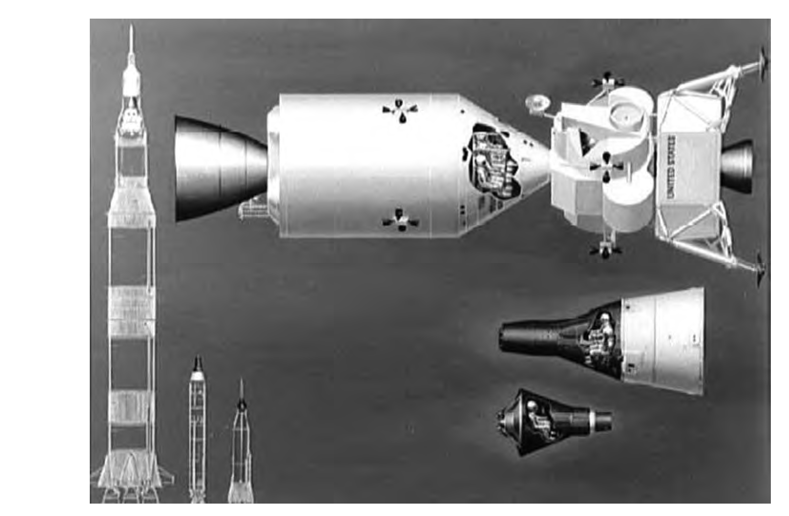
Augmentation of the Gemini network with range and range rate equipment along with the use of large S-band antennas for portions of the mission away from Earth were well understood early on in these Goddard trade studies. Table 5-1 shows the original Apollo network as envisioned in 1962.
This plan called for three block upgrades to bring the network up to its final form to support the original Apollo timetable. The so-called “1B Network” would have been used to support early test flights of the Apollo spacecraft in low-Earth orbit launched on the Saturn 1B rocket (missions AS-111 through AS-114). This first iteration would have essentially used the primary MSFN Gemini sites to provide radar tracking and TT&C support. The “V Network” would have been an interim block upgrade to support Earth orbit and high apogee missions of the Apollo spacecraft launched on the massive Saturn V launch vehicle (missions AS-201 through AS-205). Apollo Ships would have started joining the network along with an upgrade of the Madagascar site for full global USB capability. A third and final block upgrade completing the Apollo network would have added four more ships, airplanes, a USB site on Antigua, plus three 26-meter USB facilities to be located in Houston, Texas; Canberra, Australia; and Palermo, Sicily.3
| Station | Earth Orbit Missions (Early) The "Ib Network |
Earth Orbit Missions (Late) The "V Network |
Lunar Missions |
|---|---|---|---|
| Coastal Sentry Quebec | • | ||
| Grand Canary Island | • | ||
| Bermuda | • | • | • |
| Cape Canaveral | • | • | • |
| Carnarvon | • | • | • |
| Guaymas | • | • | • |
| Hawaii | • | • | • |
| White Sands | • | • | |
| Madagascar | • | • | |
| Apollo Ship 1 (Atlantic) | • | • | |
| Antigua | • | ||
| Canberra | • | ||
| Houston | • | ||
| Palermo | • | ||
| Apollo Ship 2 (Indian) | • | ||
| Apollo Ship 3 (Indian) | • | ||
| Apollo Ship 4 (Pacific) | • | ||
| Apollo Ship 5 (Pacific) | • |
As it turned out, but for use of existing MSFN radar sites, the first incarnation of the actual Apollo network bore little resemblance to what was first proposed. By the fall of 1962, TDSD had decided against using STADAN stations for Apollo, opting instead to collocate with major DSN sites. This rather significant decision was based on a combination of factors: 1) The requirement to have a backup for the 26-meter USB antenna; 2) Similar requirements for long range spacecraft communications on Apollo and deep space missions; and 3) STADAN scheduling concerns. The STADAN was fully occupied with its mission of supporting unmanned application and science satellites, the number of which NASA continually added into Earth orbit.
Early planning had pinpointed fairly well the necessary primary ground stations for the near-Earth phases of Apollo missions. Secondary sites were added as planning progressed. Twelve-meter telemetry antennas at existing MSFN stations were replaced with a new generation of smaller, 9-meter (30-foot) USB antennas. NASA continued to pool its own MSFN equipment with DOD assets to fill needs where necessary. Five instrumentation ships and eight aircraft were also employed. By the time Gemini 12 splashed down in November 1966, the first of the MSFN stations to be reconfigured for Project Apollo had appeared. In March 1967, Guam came online as the first new site constructed specifically for Apollo. The process of assembling the remainder of the Apollo stations continued through the following year and was essentially completed by February of 1968.4
During this time, the early test missions actually began before the network was completed. Apollo 4, the first flight of the Saturn V, took place on 9 November 1967 with partial participation of the emerging network. This flight was an important milestone that demonstrated Saturn V performance and verified the CM heat shield ability to withstand the 2,750ºC (5000ºF) searing heat experienced on reentry. The following month witnessed the launch of the first Test and Training Satellite (TTS-1), designed specifically to exercise the capabilities of the Apollo MSFN. (TTS checkouts continued sporadically over the next several years with TTS-2 in December 1968 just prior to the first circumlunar flight of Apollo 8, and TTS-3 in September 1971.)5 In January 1968, the network supported TT&C activities of the LM on its first unmanned test flight on Apollo 5.
A major difference between the earlier planned and the final configuration of the network was the location of the all important 26-meter (85foot) USB sites for tracking and communications during the lunar phase of the mission when Apollo was in the vicinity of and on the Moon. The underlying geographical requirement was actually very simple: provide continuous coverage with three stations separated by approximately 120º in longitude. In North America, engineers liked the original plan calling for a Houston USB site since it would have eliminated the need for White Sands and Guaymas. But TDSD’s decision to collocate the Apollo antenna with DSN made this impractical. Because Houston was only 20º east of Goldstone, California, where there was already a DSN station, there was really no justification to put a USB station near Houston—as the original plan had called for. (The Goldstone Communications Complex in the Mojave Desert would become the largest concentration of NASA tracking and data acquisition equipment in the world, encompassing sites for all three networks: DSN, MSFN, and STADAN.)6
Locating the 26-meter (85-foot) antenna near a backup was a written requirement for Apollo lunar operations. Redundancy using the DSN relied on a microwave relay connection between the MSFN primary antenna and the JPL-directed DSN antenna.The DSN system was referred to as an Apollo “wing-station” in this arrangement.With this link, the DSN antenna was slaved to and driven by the MSFN antenna, providing a full backup capability. At Goldstone, the original Pioneer site (DSS 11) served as the Apollo wing-station.
In the Southern Hemisphere, the proposed Canberra, Australia station (Honeysuckle Creek) was kept as in the original plan and collocated near the Tidbinbilla DSN wing-station some 30 kilometers (20 miles) away. That left a third site which had to be in the European area. Factors such as cost of operations, ease of accessibility, topology, and as always, cooperation of the foreign government involved, all went into the decision. On 28 January 1964, the United States and Spain reached an agreement to put the third 26-meter (85-foot) MSFN station at Fresnedillas some 50 kilometers (30 miles) west of Madrid, again located near a DSN site that was then being built (the Robledo DSN Station).
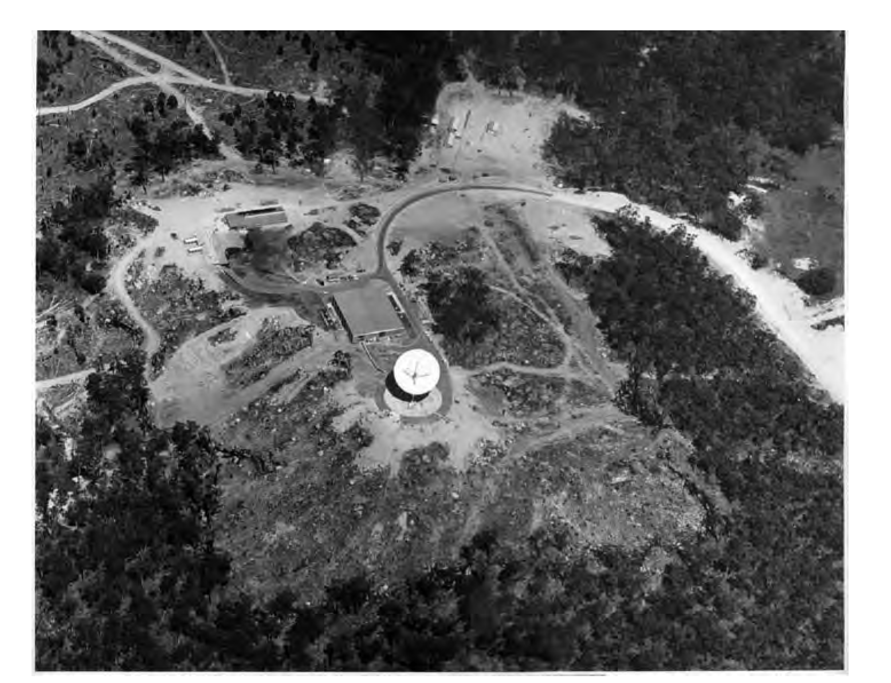
These, the three most powerful primary stations, were joined in the network by 11 other ground locations also classified as primary but featuring the smaller 9-meter antennas. In February 1965, Goddard awarded the Dallas Division of the Collins Radio Company $2.74 million to install the USB systems at the three sites. It was the follow-on to the $20 million contract that Collins received the previous year to install the 9-meter (30-foot) systems.7
The Apollo 26-meter diameter tracking antenna was quite large, the biggest of its kind in the Goddard networks—only the 70, 64, and 34-meter (230, 210, and 111-foot) dishes of the DSN were bigger. A novel sight is seeing these big dishes move, almost effortlessly, as they tracked an object across the sky. Much of this had to do with how well the weight of the antennas was balanced. Its ability to move smoothly and point accurately to within 1/100th of a degree directly affected how well it could stay tracked—or autotrack—on a spacecraft. These antennas were moved using gear-box mechanisms (gimbals) driven by hydraulic servos. With the large dish carefully balanced using counterweights, relatively low torque electric motors could be used to drive even the largest antennas. Most of today’s modern tracking antennas allow for rotation in all three axes. In the 1960s, however, systems could move only in two axes. Many, like the MSFN 26-meter antenna, had a so-called ‘X-Y mount’ where an X-axis gear wheel drove the antenna in the north-south direction while the Y-axis gear wheel (mounted above the X-axis) drove the antenna in the east-west direction. This design allowed horizon-to-horizon tracking as the antenna could be pointed on the horizon in any direction to pick up a spacecraft ascending into view. These largest of the MSFN antennas could move at a good pace, tracking a spacecraft at rates of up to three degrees per second in both axes.8
In addition to DSN, several STADAN and DOD stations were also assigned to support Apollo in a backup or standby capacity. Three STADAN stations in the Southern Hemisphere—Lima, South Africa, and Tananarive— were tasked as needed. But it was the Air Force that furnished the majority of the supplemental stations, some of which were also located near MSFN sites. These were mainly radar sites in the Eastern Test Range; none were involved in USB operations. Across the network, different stations had different jobs. For example, the three 26 meters provided coverage for operations in the lunar vicinity and for EVA while the astronauts were on the lunar surface. The 9-meter antennas monitored the spacecraft during its transit to and from the Moon. Bermuda continued in its familiar role as the go/no-go decision site. Stations like Carnarvon and Hawaii were critical for near-Earth portions of a mission, both during outward bound (TLI) and when returning from the Moon and reentry. Grand Bahama, Antigua, and Ascension monitored, respectively, the early (S-IC first stage) and late (S-II and S-IVB second and third stages) phases of the Saturn V’s powered flight into orbit.9
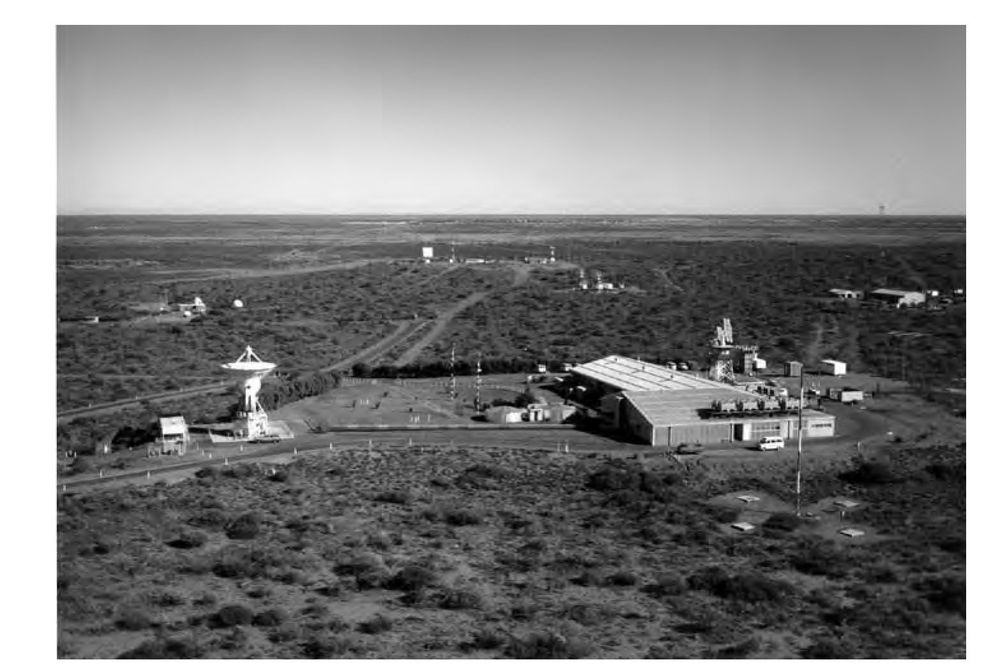
Range instrumented ships had been an integral part of the manned network since Project Mercury. Ships have the distinct advantage over land stations because of their mobility; their big disadvantage is the higher operating cost (about twice that of land stations). Early network plans in 1962 had called for five Apollo Instrumentation Ships (AIS), two to be assigned to the Indian Ocean, two to the Pacific, and one to the Atlantic. By early 1966, however, Goddard had refined the plan so as to accommodate several Apollo mission profiles to where three TLI insertion ships were needed, one each for the Atlantic, Pacific, and Indian Oceans. In addition, two reentry ships were to be stationed in the Pacific. The five ships assigned to the Apollo network replaced the three that had been in service from the Mercury years, including the aging Coastal Sentry Quebec and Rose Knot Victor. In October 1968, just prior to Apollo 7 (the first human flight of the new Block II CSM), NASA returned the Watertown—one of its two reentry ships—back to the U.S. Navy. TDSD evidently felt confident that it had adequate coverage in the Pacific with Guam, Hawaii, plus the Huntsville, to the point that a second ship was really not necessary.
This contingent of ships was the AIS fleet as deployed through Apollo 11. They had the obvious advantage over their land counterparts in that they were able to change their area of coverage from mission to mission depending on what was needed. On Apollo 8—the historic first human circumlunar flight—for instance, one insertion ship (Vanguard) was stationed in the Atlantic and one was in the Indian Ocean (Mercury). The third insertion ship (Redstone) along with the reentry ship (Huntsville) took up positions in the Pacific.10
Apollo was launched from the Kennedy Space Center at azimuths between 72 and 108°, depending on the particular mission (90° is a launch due east). Culminating the boost phase was the first burn of the S-IVB third stage of the Saturn V launch vehicle to provide the necessary impulse to insert the spacecraft into Earth orbit. As early as 1964, the OTDA had imposed the requirement for continuous two-way voice communications, reception of telemetry, command capability, and tracking during ascent into Earth orbit. The primary use of the tracking data was to verify that a proper parking orbit had been achieved, while command uplink and telemetry downlink were requirements for flight control operations to evaluate the health and status of the spacecraft and astronauts.
Since the third stage burn occurred about 2,250 kilometers (1,400 miles) downrange of the Cape, it was outside the coverage area of the Bermuda Station, and for most launch azimuths, also outside that of the Antigua Station. It was thus necessary to have a station farther downrange in the mid-Atlantic that was east of both of these islands. The ideal spot for such a station was at 24° North by 48° West. Unfortunately, no island or suitable land mass exists in the immediate vicinity of that location. Therefore, a ship was needed.11
While the first burn of the S-IVB got Apollo into Earth orbit, it could not yet begin the trek to the Moon. That was done with the TLI, a second burn of the S-IVB, raising the velocity of the spacecraft by some 3,550 meters per second (11,700 feet-per-second) to attain escape velocity. TLI was one of the most critical events of a flight, one that had to be monitored reliably. Once the burn was completed, the spacecraft was committed on a trajectory to the Moon and the three astronauts would not be able to return to Earth for at least four days—even on a so-called “free-return trajectory” where the spacecraft made a giant “figure 8” around the Moon and coasted back to Earth without making any additional engine burns.
Apollo mission requirements at the time called for tracking to begin no later than seven minutes after the end of the TLI burn to provide Mission Control with the necessary attitude data to make the important go/no-go decision on “transposition and docking”—a tricky maneuver in which the CSM travels a short distance away from the LM, turns around, docks with it and then pulls the LM out of the adaptor housing and away from the spent SIVB third stage. In a 1964 memorandum from the OTDA to Donald Crabill of the Bureau of the Budget, Gerald Truszynski pointed out that while the South Africa and Madagascar stations could provide post injection coverage in that area, it would only be partial and would not be as complete compared to a ship stationed in the Indian Ocean.12 Truszynski also pointed out two other factors favoring a sea-based solution. First, a ship was already being planned to alleviate coverage gaps on non-Apollo missions. Second, the State Department did a study on the long term political stability of South Africa which “did not assure retention of a critical major Apollo support station in the time period required.”13
The return phase of Apollo also required some special coverage planning. As the CM reentered the atmosphere at the end of a mission, it could, by rolling the craft, control its lift-to-drag ratio making it possible for landing to occur in a fairly long corridor 2,200 to 9,250 kilometers (1,200 to 5,000 nautical miles) downrange from the point where it first entered the atmosphere. To pinpoint the expected splashdown location, network engineers had determined that a tracking contact of approximately three minutes in duration had to be made starting at the end of the initial telemetry blackout period. With the blackout window spanning 370 to 1,850 kilometers (200 to 1,000 nautical miles) downrange of the initial entry point, coverage had to be available out to 3,330 kilometers (1,800 nautical miles) from the point where the CM first entered the atmosphere in order to meet the three minute requirement.14
That was not the only factor. Depending on the mission, Apollo splashdown could occur either in the northern recovery area in the vicinity of Hawaii or in a southern area near Samoa. This left a lot of ocean to be covered. While there were islands in the western Pacific which could have been used as land stations, a total of seven sites would have been needed just to meet this three minute requirement, a requirement that could be met by using just three ships.
From an overall cost standpoint, though, it turned out that there was actually very little difference between using ships versus using land stations to cover post-injection, insertion, and reentry tracking. Here’s why: Of the proposed five ships, OTDA had determined that all but one could have been replaced by land stations given the proper political environment. These four ships could have been substituted with eight new ground stations. In 1964, each new station cost about $12 million to build. Thus, the initial investment for land stations would have been in the neighborhood of $96 million. From NASA’s experience with the Navy, the cost of obtaining and refurbishing four ships would have amounted to $98 million. Hence, there was only a two percent difference between the two solutions in terms of initial cost investment. As for annual operating cost, the rule of thumb was that a ship cost twice as much to operate as a land station. There was thus little difference in operating four ships versus eight land stations.15
With one of those rare occasions when cost was not a major player, OTDA went ahead with the ship-based solution based on the technical advantages:
- Position of the ships may be changed to meet requirements of individual missions whereas land locations were fixed.
- It was only necessary to maintain four communication links back to the United States instead eight, thereby reducing mission complexity.
To implement this solution, NASA acquired three “19-class” T-2 tankers and converted them into highly instrumented vessels equivalent in many respects to a primary ground station. Each ship possessed the same C-band radar and the same 9-meter USB antenna common to the Apollo prime stations.16 The three ships, the Mercury, Redstone, and Vanguard, provided the network with the required flexibility to support various launch azimuths, Earth orbit insertion points and differing TLI points—all mission dependent parameters. In this way, all critical flight phases were covered and tracking gaps reduced.
These ships were large—a necessity, serving as stable platforms under severe sea states. The Vanguard, for instance, measured 181 meters (595 feet) in length with a 23-meter (75-foot) beam. It had a cruising speed of 26 kilometers per hour (14 knots) and a dash speed of 31.5 kilometers per hour (17 knots). These were tracking stations in every respect, capable of remaining at sea for two months, supporting a full Military Sea Transport Service crew and more than 200 field technicians. With enough electricity to supply a town of 5,000 people, they were equipped with facilities such as a store, barbershop, weight room, and a movie lounge. There was a hospital on board as well.
Serving as reentry ships in the Pacific were the Huntsville and Watertown. Being converted World War II “Victory” ships, these were somewhat smaller than the three insertion ships, measuring 139 meters (455 feet) long by 19 meters (62 feet) wide. They could accommodate 130 technicians and carried the same range of TT&C hardware as their larger counterparts, with the exception of a smaller, 3.6-meter (12-foot) diameter USB antenna.17
Taking these old World War II ships out of mothballs and retrofitting them into the space age was, as one can imagine, no simple job. Such an undertaking presented many technical challenges which NASA was not at liberty, in this case, to work out by itself. This was because as a part of the FY 1964 congressional action on NASA funding, Congress had instructed the space agency and the Department of Defense to work together and pool resources for the expressed purpose of acquiring range instrumentation ships. Congress knew this was not going to be an easy task, as both organizations— one civilian, the other military—needed to determine what was the best method of meeting joint ship requirements and to establish rules of operations. One thing was clear. Since these were going to be sea faring vessels, the DOD would have the lead responsibility for them.
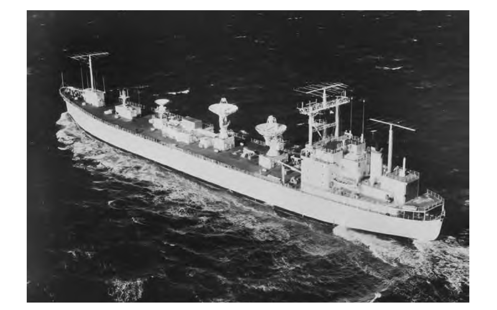
To execute this agreement, the DOD established an Instrumentation Ships Project Office responsible for procuring and modifying the ships. The office was run by the Navy with representatives from both the Air Force and NASA. It quickly drew up specifications and bidding plans for the ships such that by September 1964, a competitive contract had been let. A $77.5 million fixed-price contract was awarded to the General Dynamics Corporation to convert and instrument three ships taken out of storage. Part of the work included installing, checking out, and integrating some $35 million worth of government furnished range instrumentation equipment onboard the vessels.18
From day one, the delivery timetable for the ships was inextricably tied to the development schedule of the Saturn IB and Saturn V launch vehicles. In order to support the flight test schedule, the original delivery dates planned for the three ships were for April, July and October of 1966. In late 1965, a requirement was added to install satellite communication terminals on the ships to ensure that communications between the ships and the Mission Control Center in Houston would not be at risk. To accommodate this new requirement, General Dynamics slipped the delivery by several months, to July and December of 1966 and January 1967.
As the first ship (Vanguard) approached completion and sea trials were being conducted in June of 1966, a number of technical problems began to surface. Many of these were of the type that could not have been detected until the complete system was tested at sea when the full dynamic effects of rough seas and high winds were combined. But however formidable, these problems were within the scope of the contract and were therefore, General Dynamic’s responsibility to correct. Fixes proved inadequate and the delivery schedule suffered, slipping on a month-by-month basis. Listed is a sampling of the technical problems that arose, and their solution:
- The 9-meter diameter telemetry antenna did not operate satisfactorily over the entire required frequency range (from VHF to S-band).The antenna feed had to be redesigned and reinstalled.
- The same telemetry antenna also had a serious vibration problem. This was corrected after much engineering analysis by structurally stiffening the dish and by installing an electrical filter that eliminated spurious signals (RF noise) from the antenna drive mechanism.
- The command uplink antenna was simply too dynamically unstable in high wind conditions. It was completely redesigned to improve its aerodynamics and to make it smaller and lighter so as to improve servo drive response.
- The high frequency radio transmitting antennas—three on each ship—could not operate at full power because of electrical insulation problems. These had to be redesigned and replaced.
- The servo drive system for the satellite communications antenna, along with the antenna feed itself, did not perform according to specifications. The sensitivity was too low because of the poor quality of the antenna sub-reflector surface. These problems were rectified through redesign and remanufacturing of the hardware.19
As it became evident that these problems were impacting ship delivery, NASA sharply increased its day-to-day workings with the Navy and with General Dynamics. Managers from Goddard and Headquarters even went directly to top General Dynamics management, requesting them to bring the strongest possible management effort to bear on these problems so as to ensure adequate and timely solutions. Subcontractor problems were also uncovered. General Dynamics in turn, as part of their increased effort, brought in special consultants from outside the company and from academia. An MIT professor, for instance, was brought in to tackle the difficulties with excessive antenna vibrations.
NASA had to walk a fine line. Since the contract for the AIS was actually a Navy contract executed by its Instrumentation Ships Project Office, its actions with General Dynamics had to always be taken in full coordination with that office. The Navy cooperated and responded to NASA, passing its own rather strong terms down to its contractors. The strong management tactics worked. General Dynamics responded to the government pressure by instituting more frequent and detailed top-level management reviews of the project. They also assigned a senior company official at the vice president level to work fulltime overseeing the project, this in addition to the Program Manager already assigned. The company also tightened up scheduling control over Bendix, their main subcontractor, and instituted bi-weekly senior management reviews attended by the President and Vice President of General Dynamics Electronics as well as the Executive Group Vice President from their Headquarters.20
Results were slow at first. For a few months, there seemed to be little progress. The pace eventually picked up, though, and much time was made up in the last few months of the delivery schedule. A limited ship capability was finally fielded in the fall of 1967 just in time to support the November launch of the first uncrewed Saturn V on Apollo 4. By the time the first crewed flight of the huge launch vehicle took place in December of the following year (Apollo 8), the AIS fleet was ready and at full strength.
In 1964, the OTDA had estimated the initial investment for the five ship AIS fleet at $98 million. The actual price tag, however, turned out to be $186.6 million, almost twice as much as predicted. On top of that, the annual cost of operating the ships had, by 1969, reached $5 million for each of the three insertion ships and $3.5 million apiece for the smaller Huntsville and Watertown.21 In a cost saving move, NASA returned the USNS Watertown back to the Navy after the launch of the ATS-D satellite in August of that year. This raised concern within Congress, some thinking that the space agency was putting cost ahead of safety.
In reality, this move was based on changes in mission requirements that had been taking place. In the early stages of Apollo planning, reentry in either the Northern or the Southern Hemisphere was simultaneously considered to accommodate maximum flexibility in lunar mission planning, particularly for variable times of stay and departure from the Moon. As NASA progressed through the early Apollo/Saturn V development flights, it became evident to mission planners that a preselection of the return flight trajectory had to be made well in advance of launch. This change in requirement reduced the reentry zones that needed to be covered from two to one. As a result, only one reentry ship would be needed; hence, the release of the Watertown before the first crewed mission was even flown.
On top of this, as more Apollo/Saturn test flights took place, more and more information was gained across the board reducing the amount of uncertainty in the performance of the CM in such areas as reentry aerodynamics, heat-shield performance, and the capability of the onboard guidance system to achieve a controlled and accurate reentry. All these served to reduce the landing footprint, to the point where recovery aircraft could now handle nearly all the reentry communication and tracking functions. This development eventually led to the release of the USNS Huntsville back to the Navy at the conclusion of Apollo 11.
Similar significant reduction in coverage requirements for the outward bound (specifically, TLI) portion of a lunar mission was also taking place. This could be attributed to three things all having to do with raised confidence that mission planners now had in the performance of the Apollo spacecraft and its Saturn V launch vehicle. The first was a reduction in the launch window. To the Agency’s delight, Apollo/Saturn V test launches to date had all occurred on time and at the beginning of a launch window. As a result of this demonstrated launch-on-time capability, the probability of missing a launch window on a given day was considered an acceptable risk, one which in no way compromised crew safety. A shorter window, in turn, engendered a reduction in the needed TLI coverage area.22
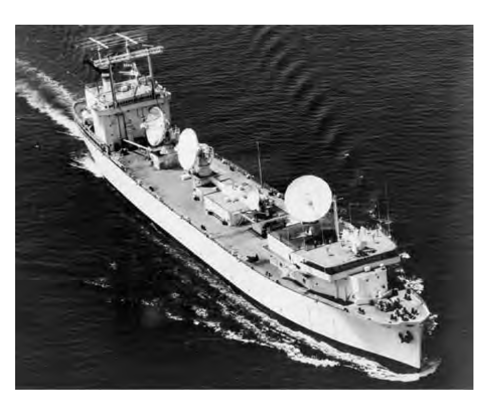
The second reason was also related to launch-on-time confidence. From orbit mechanics, the location over Earth at which trajectory injection for lunar flight must take place was determined by the time and date of launch and the relative positions of Earth and its Moon. In NASA’s planning for missions through the first lunar landing—to ensure the maximum number of chances for a launch—mission planners planned for a wide spread of launch azimuths, which meant that the TLI burn could take place anywhere over a wide geographical area. With the now reduced spread of launch azimuths, this coverage area could also be reduced.23
Finally, battery lifetime of the tracking beacon aboard the S-IVB third stage had been extended by nearly 50 percent since the first Saturn V launch on Apollo 4, 9 November 1967. This had ramifications to network requirements because after the TLI burn, the Apollo spacecraft, still attached to the burnt-out S-IVB, must be precisely tracked in preparation for transposition and docking. With the increased third stage beacon life, considerably more time was now available for the ground to perform this track, to the point where engineers could afford to wait until a land station came into view. Ship requirement for TLI tracking could thus be alleviated.24
All these factors allowed injection tracking to now be done by the Apollo land stations supplemented with a small number of instrumented aircraft. The net effect of these developments enabled the network to eventually relinquish two of the three injection tracking ships—the Redstone and the Mercury—starting with Apollo 12. It thus left the Vanguard as the only remaining Apollo ship operating after Apollo 11. At $6 million a year, it was the most expensive to operate, but was well used, supporting not only human space missions but also NASA projects such as the Pioneer deep space probes. TT&C equipment from the ships was returned to the MSFN equipment pool and redistributed for use at ground stations and on aircraft.25
In addition to the instrumentation ships, eight Apollo Range Instrumentation Aircraft, or ARIA, served the network as airborne communication points relaying voice transmissions between the spacecraft and Houston. These aircraft were deployed—either in the Pacific or in the Atlantic depending on the relative positions of the Moon with respect to Earth— during each mission launch window. Without the vantage point of these airborne platforms flying some 10,500 meters (35,000 feet) above the ocean, as many as 20 to 30 relay ships would have been required just to relay communications between the spacecraft and ground stations.26
But even from their birds-eye vantage point, eight ARIAs were still needed to provide coverage in the Pacific and four in the Atlantic. NASA had originally planned on a fleet of 12 aircraft. In 1964, an Office of Manned Space Flight study concluded that a reduction in the area coverage per Apollo mission could be tolerated within the so-called “delta-V budget” of the spacecraft. What this meant was that, based on the propulsion capability (limitation) of the Saturn V launch vehicle then under development, the location where injection into lunar trajectory could take place on a given mission had to be either over the Pacific or the Atlantic, but not both. The TLI area thus had to be designated well in advance of a particular mission, as well as the reentry area. Mission coverage requirements, therefore, changed from two-ocean support to single-ocean support and the number of ARIAs reduced from 12 to 8 (6 for primary mission support, 2 for backup) for Pacific operations and down to 4 for Atlantic support. This amounted to a savings of $32.4 million.27
As Apollo preparations matured over the next three years, GSFC and MSC began to see that this reduction in the ARIA fleet was going to present coverage limitations. On some flights, it was inevitable that lunar trajectory injection was going to shift to a different location as the launch window progressed. If a launch were delayed and it became necessary to move to the other ocean, the entire mission timeline would then have to be adjusted since it took approximately 60 hours to reposition the fleet of aircraft from one ocean theater to the other. This was yet another seemingly simple but important reason why NASA always wanted Apollo Moon missions to take place as early as possible in a given launch window.28
The ARIAs were converted C-135A cargo airframes that NASA acquired on long term loan from the Air Force. They were heavily instrumented. Externally, the most obvious difference in the aircraft from regular C-135s was a large bulbous nose—a 3-meter (10-foot) radome that housed the world’s largest airborne steerable antenna at the time. The antenna itself was a 2-meter (7-foot) S-band parabolic dish used for telemetry and voice. In addition to the “droop snoot” nose as it soon came to be known, the ARIA—designated the EC-135N—had a probe antenna on each wing tip that was used to enhance high frequency radio transmission and reception. A high frequency trailing wire antenna was added to the bottom of the fuselage. The aircraft was also heavily modified inside the fuselage to accommodate the suite of core electronics and facilities were added for eight more crew members.29
ARIA capabilities normally consisted of the following:
- For telemetry reception and recording: single USB link, an S-band Pulse Code Modulation link, 6 VHF links.
- Telemetry was usually recorded live and then “dumped” over the first available Apollo site (ship or ground station) for transmission to Houston.
- USB and VHF voice reception and recording for real-time spacecraft/MCC voice relay.
- Two-way, 100 words-per-minute teletype.30
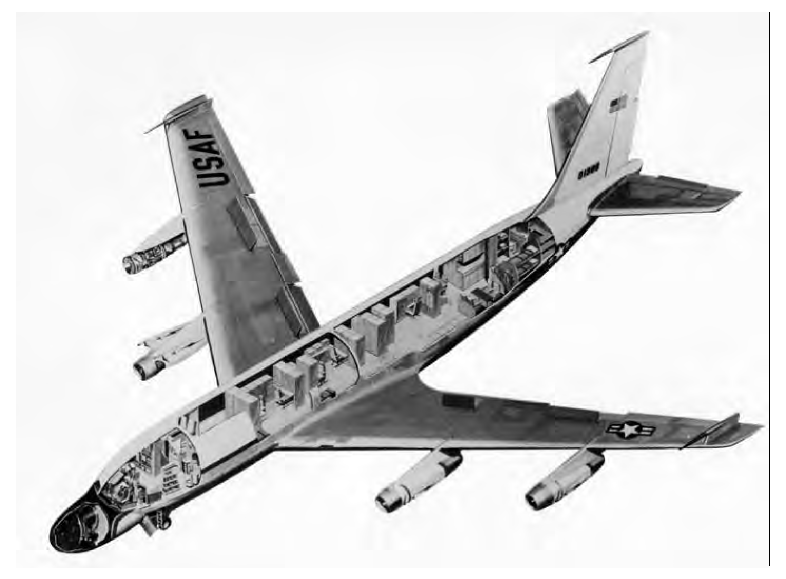
ARIAs had a nominal crew of 16. They were based at Patrick Air Force Base and flew out several days prior to a launch to their forward station in the mission operations area: Hickam Air Force Base in Hawaii or Ascension Island in the Atlantic.31 Then on the day of the mission, the plane would fly to its assigned airspace to support launch or recovery.
Just as NASA had an agreement with the Air Force for launch support at Cape Canaveral, it had a similar agreement for the ARIA. Under a 10 November 1965 NASA-DOD cost sharing memorandum of agreement, the National Range Division (NRD) of the Air Force Systems Command (AFSC) had overall responsibility for the ARIA project. NASA provided the specifications and labor for its equipment and instrumentation needs while the Air Force provided structural modifications and the general onboard range equipment. There was a further breakdown of labor since, another division within AFSC (the Electronic Systems Division,or ESD),was responsible for the detailed Definition and Acquisition Phases of the project. Management and engineering change control was thus maintained by NASA and NRD through representation in the ESD project office and an ARIA Project Configuration Control Board.
In this somewhat convoluted arrangement, the Air Force NRD operated, maintained and provided logistical support for the aircraft for NASA. Scheduling and aircraft availability was maintained through a senior-level joint NASA/DOD panel.32 GSFC was the executing agent in administering and managing the NASA portion of the ARIA program. To this end, it was responsible for three things: 1) generate the necessary specifications for the communications equipment needed for Apollo; 2) ensure that the ARIA met overall Apollo requirements; and 3) integrate these aircraft into the MSFN.33
To modify the aircraft, the Air Force contracted Douglas Aircraft Company of Tulsa, Oklahoma, to serve as prime contractor with BFEC as their subcontractor. In this arrangement, Douglas was responsible for modifying the airframe while Bendix was responsible for supplying the generic and Apollo-specific suite of range instrumentation equipment to be installed on the aircraft. Contractor work during Apollo was driven by a tight schedule and ARIA was no exception. To meet delivery milestones, ESD issued the Douglas team with a fixed price contract heavy on delivery and performance incentives. While the target cost was $27.2 million, the contract could be worth well over $30 million if all the incentives were awarded. The first ARIA—scheduled for delivery in the first-quarter of 1966—was delayed and finally delivered to the Air Force near the end of the year, just in time to pass its first live test on Gemini 12 in November 1966.34
The remaining seven ARIAs trickled in throughout 1967 and into the following January. At its peak, Douglas (later McDonnell-Douglas after its 1967 merger with the McDonnell Aircraft Corporation) had over 300 people working on the ARIA program at its Tulsa plant.35 After Apollo concluded in 1975, the word “Apollo” was changed to “Advanced” and the Air Force fleet of aircraft continued serving under the ARIA name, successfully supporting a host of NASA satellite launches, Skylab and planetary probes such as Viking and Voyager. Over the next 30 years, the DOD has maintained ownership of the aircraft which have been used primarily to support military ballistic missile testing activities.
In all its years of near flawless service, there was only one major accident. But it was tragic. On the morning of 6 May 1981, one of the planes— ARIA 328—took off from Wright-Patterson Air Force Base in Fairborn, Ohio, on a training mission. All 21 onboard perished just an hour later in a horrific crash. Among those killed were three civilians, two of whom were wives of crew members who were on the flight as part of a program for them to become more familiar with their husbands’ work. Today, a living memorial dedicated to those who perished resides near the place where ARIA 328 took off that ill-fated morning. A bronze plaque, along with 21 flowering Table 5-2: The Manned Space Flight Network as Implemented for Apollo*38 crab apple trees, each symbolizing a lost soul, rests in the memorial garden at the United States Air Force Museum in Dayton, Ohio.37 On 24 August 2001, the last ARIA flight landed at Edwards Air Force Base to bring the airborne tracking program to an end.
Besides ground stations, the AIS and the ARIA, NASA added a fourth tracking element during Apollo. This one was in space. To further cut down on potential communication gaps, the Agency called on the services of two communication satellites operated by the International Telecommunications Satellite Consortium, or Intelsat. One was the Intelsat Atlantic satellite, located in geosynchronous orbit at 6º west longitude off the coast of Africa. From this vantage point, it could provide communication relay for the Indian Ocean ship (usually the Mercury), the Ascension Island Station, the Atlantic Ocean ship (usually the Vanguard), and the Canary Island Station. The other was the Intelsat Pacific satellite, located at approximately 5° west of the international dateline over the Kiribatis in the mid-Pacific. It served the Australian stations, Guam and Hawaii as well as the Pacific ships Huntsville and Redstone. Eventually, reliance on Intelsat for communications relay would free up the ARIA to focus on real time USB support.38
| Station | Abbreviation | USB Antenna | C-Band Radar | VHF TM Downlink | UHF CMD Uplink | Other | |||
|---|---|---|---|---|---|---|---|---|---|
| 12' | 30' | 85' | |||||||
| Primary Stations | |||||||||
| Antigua | ANT | • | • | • | |||||
| Ascension | ACN | • | • | ||||||
| Bermuda | BDA | • | • | • | • | ||||
| Canberra | HSK | • | |||||||
| Carnarvon | CRO | • | • | • | • | ||||
| Corpus Christi | TEX | • | • | • | |||||
| Goldstone | GDS | • | • | ||||||
| Grand Bahama | GBM | • | • | • | |||||
| Grand Canary | CYI | • | • | • | • | ||||
| Guam | GWM | • | • | • | |||||
| Guaymas | GYM | • | • | • | |||||
| Hawaii | HAW | • | • | • | • | ||||
| Madrid | MAD | • | |||||||
| Merritt Island | MIL | • | • | • | |||||
| Ships and Aircraft** | |||||||||
| Huntsville | HTV | • | • | • | • | ||||
| Mercury | MER | • | • | • | |||||
| Redstone | RED | • | • | • | |||||
| Vanguard | VAN | • | • | • | |||||
| Watertown | WTN | • | • | • | • | ||||
| Aircraft (8)*** | ARIA | • | |||||||
| NASA Support Stations | |||||||||
| Canberra (DSN) | CNBX | • | |||||||
| Goldstone (DSN) | GDSX | • | |||||||
| Lima (STADAN) | LIMA | • | |||||||
| Madrid (DSN) | MADX | • | |||||||
| Pretoria (STADAN) | PRE | • | |||||||
| Tananarive (STADAN) | TAN | • | |||||||
| White Sands (MSFN/DOD) | WHS | • | |||||||
| Woomera (MFSN) | WOM | • | |||||||
| DOD Support Stations | |||||||||
| Antigua | ANT | • | |||||||
| Ascension | ASC | • | |||||||
| Cape Canaveral | CNV | • | |||||||
| Grand Bahama | GBI | • | |||||||
| Merritt Island | MLA | • | |||||||
| Patrick AFB | PAT | • | |||||||
| Vandenberg AFB | CAL | • | |||||||
* Nominal configuration 1968-1972
** The Huntsville and Mercury were usually stationed in the Pacific to monitor orbit injection, reentry and recovery. The Redstone was usually on station in the Indian Ocean with the Vanguard in the Atlantic. The Watertown was deployed only for the early developmental flights and was removed from service in October 1968 prior to the first human flight (Apollo 7).
*** Eight Apollo Range Instrumentation Aircraft were used as communication relays to support operations in areas where there were no grounds stations, especially during reentry and landing.
Table 5-2 summarizes the Apollo Network as it was eventually established in 1968 (also see map in Appendix 1). This was essentially the configuration used throughout the lunar landing program, with ships, aircraft, and satellites being augmented on a mission by mission basis.
As the MSFN was being modified for Apollo, centralization, network communications and the ability to make decisions at remote ground stations were again topics that came to the forefront. In the Mercury days, the network had flight controllers and a Capcom at all of the prime stations mainly because worldwide, real-time communications were still in its infancy. Thus each primary site had the means to make critical decisions and to execute command instructions in the case of a communications failure. In addition, Bermuda had a computer of its own, to help make the vital go/ no-go decision should communication with the main computing center at Goddard be severed.
On Apollo, GSFC, MSC, and Headquarters jointly agreed to use computers at outlying network stations. This was a radical move and a fundamental change away from what had been done up until then. The decision was not reached without controversy. Network philosophy had always been that ground stations would transmit raw, unprocessed (or slightly processed) data back to a central computing center—first located at Goddard and later moved to Houston. The expansion of NASCOM had made this possible. With Apollo, however, data rates increased several-fold over Gemini, and live television (a high bandwidth item) was added.39
To handle these faster processing requirements, 14 land stations were each fitted with two Univac 642B data processing computers to support both telemetry and command.40 (Two units were needed to allow for simultaneous tasking of telemetry and command.) The old Gemini sites that had been equipped with the aging Univac 1218s were upgraded. But the increased real-time flow of information led to a buffering problem: the outlying sites could receive far more data from the Apollo spacecraft than could be transmitted in real time to Houston over NASCOM, which could still only handle a maximum traffic rate of 2.4 kilobits-per-second (kbps). This had potentially crippling consequences. Network engineers at Goddard devised a solution which was to essentially compress each station’s aggregate data link into discrete 2.4 kbps frames or packets grouped into specific data types. By doing so, flight controllers in Houston could remotely select and query telemetry information of their choosing for review. Even though flight control consoles were installed on AISs and at some ground stations, they became unnecessary once the buffering problem was solved. These remote flight consoles were never used on a mission since controllers could review data and issue commands to the spacecraft from the MCC in Houston.41
To fully appreciate the complexity of network operations during Apollo, it is important to look at the level of teamwork that went into running the MSFN. Even though the MCC had control of the spacecraft from the ground during a mission, smooth network operations required coordination (and cooperation) between the two primary NASA centers involved: GSFC and the MSC. Before the actual mission, Greenbelt acted as the manager of network activities, preparing equipment and personnel across the network for readiness. It had the final say in pronouncing the network ready (green) or not (red). Once a mission began, though, Houston assumed control. Goddard continued in a support role to ensure overall network viability, monitoring the activities of the ground stations, ships, and aircraft for the duration of the flight. At his console in the MCC Mission Operations Control Room (the famous “Front Room” familiar to the world), the Network Controller (NC)—along with his contingent of support staff in the “unseen” Back Room—monitored network operations, maintaining contact with two key Goddard figures, namely the Network Operations Manager and his boss, the Network Director.42
Perhaps the most elegant achievement in terms of communications technology on Apollo was the use of USB. The use of a unified carrier yielded immediate benefits for the spacecraft, saving the space, weight, and power needed to accommodate other subsystems. Furthermore, communications at S-band (1550 to 5200 MHz) were much more powerful, accommodating more data than possible at the lower frequencies. But most importantly, it had the range to reach the Moon. Two competing USB systems were actually available for Project Apollo. One, under development by GSFC, was essentially an extension of the GRARR, used to support STADAN for NASA’s science satellites. The other was a JPL product originally intended for deep space use. NASA would select the JPL system but modified it for Apollo. Even with this new capability, the MSFN still kept most of the pre-USB equipment operational, the majority of stations—both old and new—still fielding VHF hardware for backup.
NASA was sending men to the Moon, but like any other television or radio station, it still had to ask for permission in order to transmit at certain frequencies. Throughout Apollo, the International Communication Union granted the MSFN transmission only on a secondary basis. What this meant was that NASA was legally required to shut down if its transmissions interfered with other authorized users. But the Agency could not complain of interference from these primary users. Sure enough, the frequency range of the Apollo USB system did overlap with the band then assigned to commercial television broadcasting. GSFC and Headquarters identified and addressed this issue early on in the planning of the Apollo network and all conflicts were successfully resolved before flights took place. No significant frequency interference problems ever developed during the 15 times that Apollo flew.43
By the spring of 1967, with the final USB upgrade at Guaymas completed, the MSFN was ready to support the first human flight of the new Apollo spacecraft. In preparation for sending men to the Moon, the GSFC had in three years established seven new ground stations and extensively modified seven others. It had now been over a year since Americans last flew in space and President Kennedy’s commitment of a Moon landing before the end of the decade was fast approaching; “Go Fever” was in full swing.
Then tragedy struck.
On the evening of 27 January 1967 during a “plugs out” launch pad countdown test at the KSC, a fire erupted in the pure oxygen atmosphere inside the Apollo Saturn 204 CM, killing astronauts Virgil I. Grissom, Edward H. White, II and Roger B. Chaffee. Super-heated flames consumed the spacecraft within 20 seconds. Grissom, White, and Chaffee didn’t stand a chance. Countdown tests involved the network stations, and Apollo 1 was no different. Shock and grief quickly spread to the stations. Overseas, where the local populace took pride in hosting “their” ground station as part of the American space program felt the sadness. Official statements of condolences poured in from around the world. On Guam, its 9th legislature passed Resolution Number 118, officially expressing the grief of the Guamanians. The Honorable E. S. Terlaje, Acting Legislative Secretary, requested NASA send copies of the Resolution to the families of the three astronauts, which James Webb did.44
The Fire, as it simply came to be known, severely impacted all aspects of Apollo. Foremost were program timeline and flight schedule. Instead of the first flight taking placing in early 1967, it was delayed for over 18 months, eventually to October of the following year. Despite this deadly setback, uncrewed launches testing the CSM, Lunar Module, and the Saturn V launch vehicle continued as NASA endeavored to recover and rebuild the program.
In the revised timetable, NASA defined seven flights (missions A through G) designed to incrementally lead to a Moon landing (the G mission) by 1970. In the fall of 1967, the giant Saturn V launch vehicle developed by the MSFC was ready for its first all-up test. On the morning of 9 November, the Apollo network was put to the test for the first time, tracking the Saturn V stack on its maiden flight. Apollo 4 was sent into a high apogee (18,079 kilometer, 11,234 mile) elliptical orbit around Earth. At the conclusion of the flight, the Service Module pointed towards Earth and fired its 20,500 pound (91,200 newton) thrust engine to accelerate the spacecraft to a velocity of 40,200 kilometers (25,000 miles) per hour, replicating return and reentry from a lunar mission.
Telemetry received onboard the Huntsville and at the Hawaii Station showed no degradation in the cabin environment, verifying the design of the CM heat shield to withstand the 2,760°C (5,000°F) temperature of reentry. This was a significant step in the program since the ability of the ablative shield to protect a returning spacecraft at such velocities was largely unknown at the time. Guided by terminal tracking data from the network, the USS Bennington successfully recovered the Command Module west of the Hawaiian Islands some nine hours after launch. Technically, programmatically and—perhaps most importantly—psychologically, Apollo 4 (the “A” mission) was an important and successful event, especially in light of the number of firsts it tackled. For the tracking network, it was the first shake-down of the MSFN for Apollo. The fact that everything worked so well with so little trouble gave NASA much needed confidence and a giant psychological boost. As Apollo Program Director Samuel Phillips phrased it, “Apollo [was] on the way to the Moon.”45
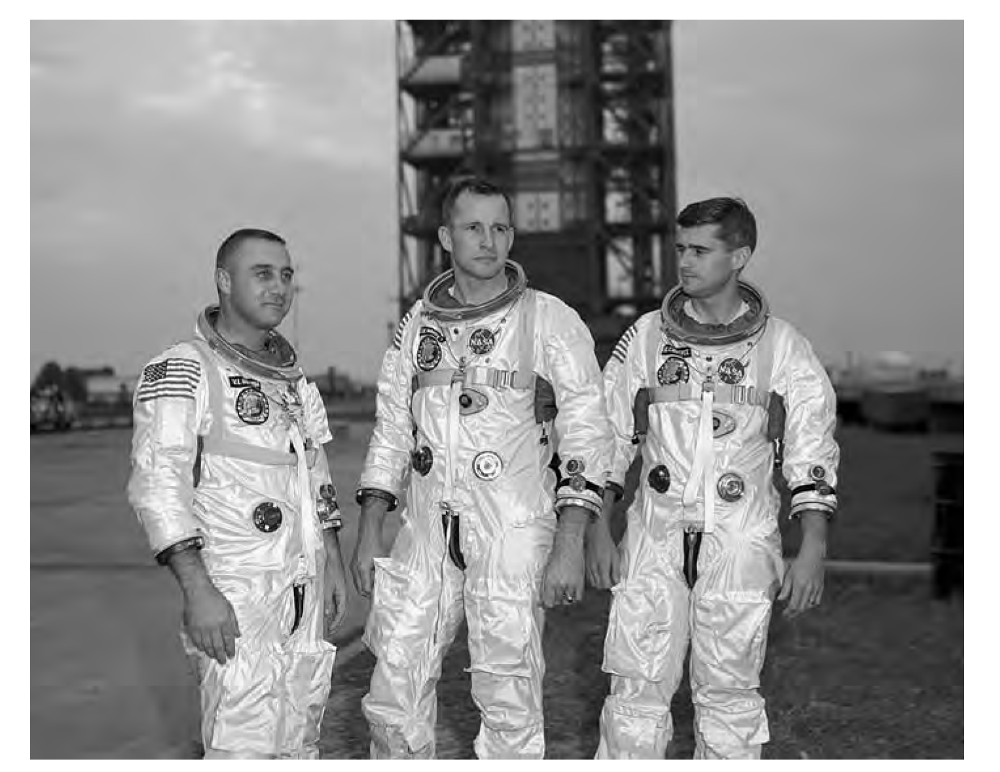
Apollo 4 was followed in January 1968 by Apollo 5, which flew for the first time the LM made by the Grumman Aircraft Engineering Corporation. The spacecraft was put through its paces using command uplinks from the ground, successfully demonstrating system performance including critical restarts of the LM ascent and descent stage engines. At one point, Houston sent a “switch-off” signal to the guidance computer and flew the LM in real time from the ground through a series of simulated landing maneuvers using only command uplinks.46
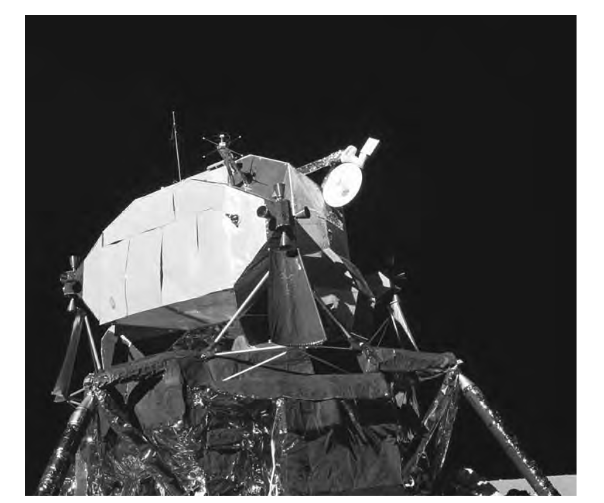
The next flight test was Apollo 6, the final uncrewed flight test of the Apollo program, on 4 April. Two minutes into that mission, telemetry received at Bermuda indicated thrust fluctuations of the S-IC first stage engines that caused the entire rocket stack to bounce like a giant pogo stick for approximately 30 seconds. During the “pogo”, telemetry also showed low-frequency oscillations reached as high as ±0.6 g inside the CM, exceeding the design criteria of ±0.25 g stipulated for human flight.47 (This was a flight rule carried over from Project Gemini. This oscillation level should not be confused with Apollo launch or reentry loads, which could exceed 8 g and which the spacecraft was designed to take.) After the first stage burnt out and was jettisoned, the five Rocktedyne J-2 engines of the S-II second stage came to life.
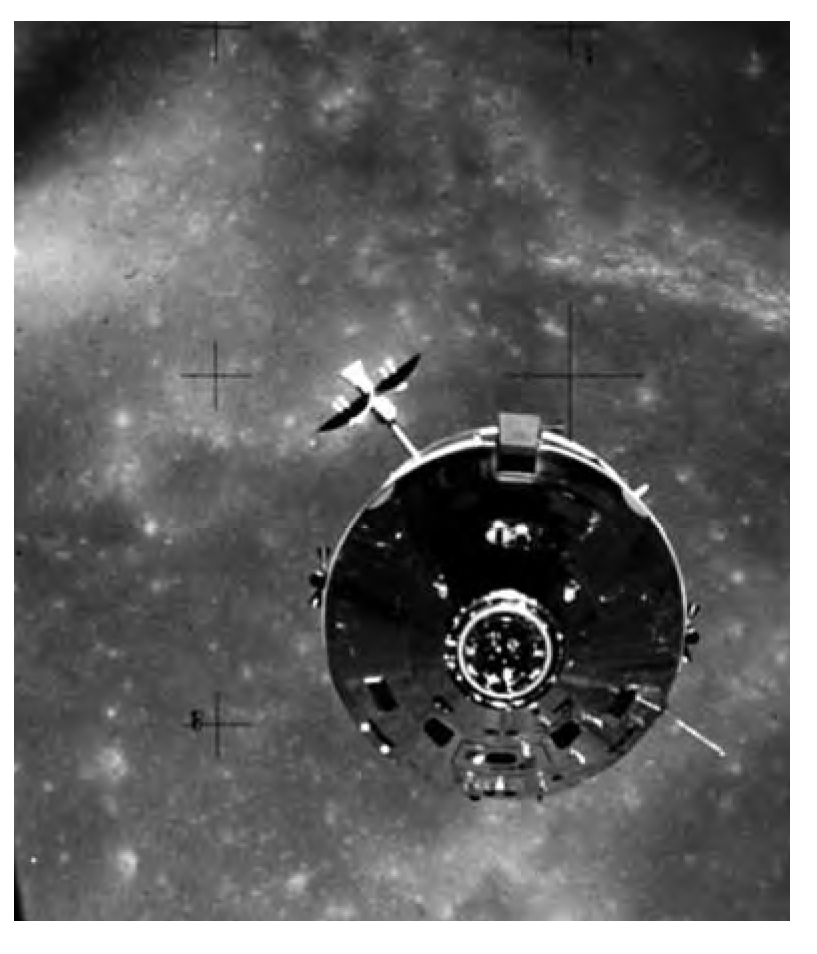
As acquisition-of-signal occurred over Antigua, telemetry indicated that two of the engines had shut down prematurely. To compensate, the onboard Instrumentation Unit automatically directed the other three engines to fire longer as flight controllers monitored the situation. Even with the extended burn time, the second stage did not reach the desired altitude and velocity before its fuel ran out. Now in order to reach the planned speed, the single S-IVB third stage engine had to burn quite a bit longer than planned. After its shutdown, an orbit determination was made from state vectors received at the Caribbean stations which showed Apollo 6 in a severely lopsided 177 by 367-kilometer (110 by 228-mile) elliptical orbit rather than the desired 257-kilometer (160-mile) circular orbit.48
MCC evaluated the situation and decided to continue into the next phase of the flight, a restart of the S-IVB engine to simulate the TLI burn. Command uplinks to the vehicle went unheeded, however. This was verified by telemetry received onboard the Vanguard that the simulated TLI burn did not in fact take place. As an alternative, Houston jettisoned the S-IVB and instead commanded the Service Module engine to fire for over seven minutes (which exceeded lunar mission requirements) to simulate the injection burn. The Vanguard tracked the CSM out to 22,200 kilometers (13,800 miles) where it was turned around and plunged back into the atmosphere for another reentry test. Because of the extended burn by the Service Propulsion System, Houston expected that the Service Module would not have enough fuel to accelerate the CM to the desired velocity. Network tracking verified this, showing the CM reentering at 35,900 kilometers (22,300 miles) per hour, some 4,500 kilometers per hour (2,800 mph) less than planned.49
The period from fall 1968 to the end of 1972 marked the apex of the program, a time in which nine missions were flown to the Moon, landing 12 men on its surface. On 11 October 1968, Apollo 7 was launched with America’s first three-person crew: Walter M. Schirra, Jr., Commander; Donn F. Eisele, CSM Pilot; and R. Walter Cunningham, LM Pilot (even though there was no LM). For nearly 11 days, the MSFN tracked the spacecraft as it made 163 orbits around Earth in an engineering flight test to demonstrate the space-worthiness of the new Block II CM, a totally redesigned spacecraft following The Fire. One improvement was a new hatch that could now be opened in just three seconds.
Among the spacecraft’s equipment and communication technologies tested was the transmission of live television from the spacecraft, a first for the manned network.50 The idea of live television had been a topic of debate ever since September 1963, when NASA first directed North American Aviation to install a portable camera in the Block I CM. With weight a constant concern, many engineers viewed the television camera only as a nicety. On occasions when pounds, even ounces, were being shaved from the CM, the camera was usually among the first items to go.
Despite the insistence of most engineers that it was not needed— and the ambivalence of the test-pilot oriented crews—there were those who persistently argued for its inclusion. NASA personnel in Public Affairs, for instance Julian W. Scheer at Headquarters and Paul P. Haney at the MSC, naturally favored the use of television. There were also managers closer to the program who agreed with them. For example, in the spring of 1964, William A. Lee, a MSC engineering manager, wrote to George Low of the Apollo Spacecraft Program Office:
I take typewriter in hand to plead once more for including in-flight TV. . . . Since [it] has little or no engineering value, the weight penalty must be assessed against a different set of standards. . . . One [objective] of the Apollo Program is to impress the world with our space supremacy. It may be assumed that the first attempt to land on the Moon will have generated a high degree of interest around the world. . . . A large portion of the civilized world will be at their TV sets wondering whether the attempt will succeed or fail.The question before the house is whether the public will receive their report of this climactic moment visually or by voice alone.51
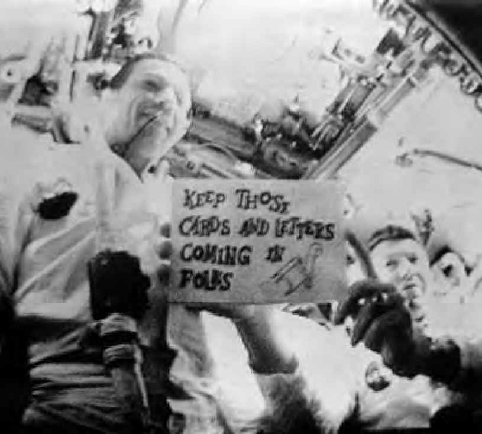
With emphasis on its civilian nature and Kennedy’s decision to play out the Moon race on world center-stage, NASA could not avoid the debate. Over the next several years, it continued with persuasive arguments for the case of live television being weighed against technical and operational considerations. Finally, in April of 1968 with the first Block II CSM (CSM-101) ready to be accepted, television became part of Apollo (and, as it turns out, all future NASA human spaceflights) when Samuel Phillips directed George Low to proceed with a camera on Apollo 7.52 It turned out that television broadcasts on the mission were a huge success, both for NASA public relations and as a technical milestone for the MSFN. The astronauts used television to show (in black and white) views of Earth outside their windows, the uniqueness of working and living in the weightlessness of space, and tours of the new Apollo spacecraft. Lasting seven to eleven minutes each, the broadcasts came to be called “The Wally, Walt and Donn Show,” even garnering a special Emmy Award from the Academy of Television Arts and Sciences the following year.53
The success of Apollo 7 was followed two months later by what would be the first complete test of the entire Apollo Network. Launched on 21 December 1968, Apollo 8 made the first lunar voyage, carrying astronauts Frank Borman, James A. Lovell, Jr., and William A. Anders to the Moon on a six-day circumlunar flight that culminated with 10 orbits around the Moon. At 10:47 a.m. EST, Capcom Michael Collins relayed through the Hawaii Station, “All right, you are go for TLI,” sending men on escape velocity away from Earth for the first time. The mission provided the first true use of the network’s large 26-meter (85-feet) USB antennas on an actual human flight; previous activities had involved only system checkouts using Pioneer space probes as TTS.
It also marked a change in the way NASA tracked spacecraft. During Mercury, Gemini and on Apollo 7, communication with the spacecraft was not continuous as the stations could not possibly cover all ground track locations around the globe. However, as Apollo 8 left the confines of Earth towards the Moon, tracking and data acquisition, ironically, became continuous. This somewhat counter-intuitive phenomenon can be explained by simple geometry. As the distance between a spacecraft and Earth increased, the field-of-view required to see it decreased. Also, as a spacecraft sped away from Earth, its motion would appear to an observer on the ground to become more and more stationary. Now instead of the spacecraft racing across the sky in a fast-moving arc, as it would when orbiting Earth, it now traveled on a line (or more precisely, a very shallow arc) slowly away from the observer. As the spacecraft traveled farther and farther away, eventually only a single ground station facing the Moon was needed to communicate with it.
Due to curvature of Earth, the Moon can only be seen comfortably (that is, above the horizon at a fairly high elevation pointing angle) at any one time from locations within a 120° longitude range. Therefore, the three stations 120° apart at Goldstone, Honeysuckle Creek, and Madrid provided continuous coverage to the spacecraft as Earth rotated over a 24-hour period. The only time loss-of-signal occurred on an Apollo mission was when the spacecraft’s orbit took it behind the Moon and for those five minutes at the end of the mission during atmospheric reentry when super-heated plasma induced RF transmission black-out.
As successful as live television was on Apollo 7, it paled in comparison to what took place from lunar orbit on Christmas Eve 1968. As a spellbound world glued their eyes to their television sets, the first live images of our planet and lunar landscape as seen by men from the Moon were transmitted from a quarter of a million miles away to the Madrid Station at Fresnedillas, Spain.54 In a telecast that would forever be etched in the memory of those who were there, black and white images of the Moon and Earth—primitive by today’s standards of brilliant high definition television (HDTV)—were shown as each astronaut took turns reading the Creation account from the first 10 verses of the Book of Genesis. As the crew completed their next to last orbit around the Moon, flight controllers—choking back tears by now—looked on as Commander Frank Borman closed the live broadcast with a farewell that reached over a billion people around the world, “We close with good night, good luck, a Merry Christmas and God bless all of you—all of you on the good Earth.”55
Borman later admitted that he and his crew had not wanted to carry a television camera. Technical reasons aside, they knew that whatever they showed and said from lunar orbit was going to be seen and heard by a whole lot of people. Not a poetic man, Borman, as mission commander, had worried about this the most.
I said ‘no’ a lot, and the nice thing about it was that NASA gave the commander enough prerogative that they backed him up. I was overruled on one thing and that was because management was a lot smarter than I was. I didn’t want to take the damn television camera with me.And they said,‘Let’s take it,’ and they were right. . . . It turned out to be so important because we could share what we saw with the world. It weighed 12 pounds [5.4 kilograms].We were cutting out everything, even down to the extra meals, which weighed 16 ounces [0.5 kilograms] or something like that. But I was very short sighted there, and NASA was right.56
By including the camera, it made the experience very real to those watching on Earth. “It didn’t add a dangerous amount of weight and the camera achieved the purpose for which it was intended: to give all Americans a real feeling for the mission and what it was accomplishing.”57 As it turned out, their broadcast was indeed seen by a worldwide audience, from the Americas to Europe (including East Berlin), parts of Asia and Africa, and even Moscow. Despite some protesting the religious nature of the message, Apollo 8’s Christmas Eve broadcast would endure to become one of the most iconic moments in space exploration history.
Having successfully demonstrated the network’s 26-meter (85foot) USB systems, the next mission Apollo 9, went back to again exercise and check out the near-Earth portion of the network. The flight was the first for the LM, the first piloted spacecraft designed exclusively for flying in the airlessness of space. The flight tested, for the first time, MSFN capability to simultaneously track and communicate with both the CSM and the LM. LM USB equipment such as dual-redundant transceivers, the audio center, pulse-code telemetry, central timing, biomedical channels and television were thoroughly tested during this 10-day Earth orbit mission. Communication links between the LM, CSM, and the MSFN ground stations as well as the extravehicular mobility unit (the moonwalk spacesuits) were demonstrated.
After 151 revolutions, Gumdrop splashed down on 13 March 1969 near the reentry ship Huntsville and was recovered by the carrier USS Guadalcanal.58 Black and white television had worked so well on Apollo 7 through 9 that on the next flight, NASA decided to install a color system in the Apollo 10 CM. Space television had actually come quite far in a short amount of time. During the early Apollo missions, the TV used a slow-scan, black and white camera that was originally intended for development by RCA but, due to procurement delays, was eventually supplied by the MSC as government furnished equipment. That camera yielded a poorly defined, erratically moving image which MSFN stations converted into a standard commercial broadcast format (which after conversion, still exhibited uneven motions). These previous missions had shown to network engineers that there was actually sufficient margin in transmission bandwidth that good quality, color television could be attempted in real time.
Weighing “only” 5.4 kilograms (12 pounds), the new Westinghouse color camera could be handheld or bracket-mounted. Its scan rate was at the commercial 30 frames per second, 525 scan lines per frame with a resolution of 200 TV lines at the standard screen aspect ratio of 4:3.59 What viewers experienced on the ground was a fairly good picture obtained by superimposing the color signals with the imaging (pixel) data. A 7.6-centimeter (3-inch) black-and-white video monitor could even be Velcro-mounted on the camera (or at various locations inside the CM) to aide the crew in focus and exposure adjustment. By Apollo 14, color television capability had been extended from the CM to the LM and onto the lunar surface.
As soon as Apollo 10 splashed down on 26 May bringing to an end the dress rehearsal for the first lunar landing attempt (the G mission), all eyes were on Apollo 11. The historic launch took place before an estimated crowd of one million people on the morning of 16 July 1969. Onboard were Neil A. Armstrong, Commander; Michael Collins, Command Module Pilot; and Edwin E. “Buzz” Aldrin, Lunar Module Pilot. A decade of preparation had been directed toward this mission, and the MSFN now had the responsibility of tracking the three on the greatest voyage ever taken. NASA has flown over 100 more human space missions since Apollo 11 (many much more complex). But historians and grade-schoolers alike still (understandably) look back on this epochal mission as the Agency’s high point.
During a visit to the United States in October 1968, John Bolton, Director of Parkes Observatory in western New South Wales, Australia, was approached by Covington’s team to consider the possibility of making their 64-meter (210-foot) radio astronomy telescope available to support the historic mission. Although several factors played into this, the driving requirement came down to the fact that Kraft and his team at Houston lacked confidence in the S-band directional antenna of the LM. Specifically, trajectory of the LM on its descent down to the surface was such that after it emerged from behind the Moon, there was a critical but very short period of time to make a “bailout” decision. If the directional antenna was not performing properly, the signal from the lower-gain (much less powerful) VHF omni-directional antenna would be marginal at best using the network’s 26-meter (85-foot) antennas.60
The way the MSFN stations were spaced also played into this. First, the flight plan had the landing of the Lunar Module Eagle taking place towards the end of the viewing window at Goldstone and the beginning of the window at Canberra, Australia. If landing somehow got pushed beyond the Canberra window, however, then Parkes—located some three hours drive west of Canberra—would provide that extra margin to capture the signals. The mission timeline also first drafted by Houston had Armstrong and Aldrin performing the EVA shortly upon landing, with Goldstone being the prime tracking site, and with it, television responsibilities. Honeysuckle Creek, near Canberra, was to track Collins and the Command Module Columbia in lunar orbit. In this scenario, the Moon was not due to rise at Parkes until 1:02 pm local Australian time, by which time most, if not all, of the moonwalk would have been completed. Thus, Parkes Observatory was relegated to serve as backup for both the landing and the EVA. To facilitate this setup, the radio telescope would be linked via microwave to Canberra.61
This scenario changed about two months before the mission when Flight Operations in Houston decided that, to give the astronauts a better chance to acclimate to the Moon’s 1/6th gravity, a sleep period would be allowed before commencing the EVA. Thus, the new plan had the moonwalk starting about 10 hours after landing, which was some 20 minutes after the Moon had set at Goldstone. In the South Pacific, however, the Moon would be high overhead over Parkes. Because of this, Parkes was redesignated the prime site for receiving the EVA telemetry.62
But things changed again. By happenstance, on 17 July—one day after the launch—a fire broke out in the power supply at Tidbinbilla (Canberra) which severely damaged the transmitter on its 26-meter antenna. Despite some quick repair work, GSFC would not take the risk and switched the station’s role with Honeysuckle Creek. Thus, the latter would now be the prime station to support lunar EVA, including reception of the crucial bio-medical telemetry from Armstrong’s and Aldrin’s Portable Life Support System (PLSS) backpacks. This was the top telemetry priority. The 26-meter antenna at nearby Tidbinbilla would be trained on Columbia instead.63
“Houston, Tranquility Base here. THE EAGLE HAS LANDED.” The words were said at 4:18 pm EDT on Sunday afternoon 20 July 1969 by Armstrong as Apollo 11 landed on the pristine surface of the Sea of Tranquility. With all LM systems checking out fine and the crew’s adrenalin pumping, it would have been incredibly anticlimactic (and probably a little unrealistic) to expect Armstrong and Aldrin to simply just go to sleep for six hours. They had, after all, just landed on the Moon! After discussions with Mission Control, Armstrong exercised his command prerogative and decided to forego the rest period and begin EVA preparations immediately. This began a chain of events from a network perspective that would ultimately decide how telemetry was received and how the world would see humankind’s first steps on the Moon.
By skipping the rest period, the EVA would begin five hours before the Moon was to rise at Parkes. However, Goldstone was in a good position. For a while, it seemed as if the Apollo Station in California would have the responsibility of televising the historic first moonwalk as originally planned. But delays kept dragging on as Armstrong and Aldrin prepared for their EVA inside the cramped quarters of the LM. By the time they were ready to egress the ship, moonrise had occurred at both Parkes and Honeysuckle.
While this was going on, a violent wind squall happened to hit the telescope at Parkes while the dish was in its most vulnerable position, pointed at the horizon awaiting moonrise. In this “zero-elevation” position, the face of the dish caught the full force of the two, 112 kilometers-per-hour (70 mph) gusts, subjecting the large antenna to 10 times the force that it was considered safe to withstand. Other structures were also batted around in the swirling winds and the weather remained bad. But in a stroke of good fortune, the winds abated just as the Moon broke horizon at Parkes.64
So, because the sleep period was skipped and EVA preparations took longer than expected, no less than three tracking stations—Goldstone, Honeysuckle Creek, Parkes—received telemetry of the incredible first steps on the Moon. Although this was a good thing (plenty of redundancy), it also engendered a dilemma: Which of these TV signals would the world see?
In Australia, signals from both Honeysuckle and Parkes were sent to Sydney by microwave links, where a NASA officer selected between the two to forward on to Houston via the NASCOM. Since moonrise occurred at Parkes just as the EVA was getting underway, the telescope was at a very low elevation angle. As a result, it had to use its less sensitive “off-axis” detector and the received signal strengths were very poor. Antenna elevation angle at Honeysuckle was higher and the resulting signal was better. This meant that its signals were passed on to Mission Control. There, a controller then selected between the Goldstone and the Honeysuckle TV signal. This selected signal (ostensibly the best of the three) was then sent to a media pool television monitor. But this was still not the TV picture that the world saw; there was one more step. The image displayed on this NASA monitor was then filmed lived by a media pool camera for transmission to individual domestic and international TV networks. As a result, what people saw in their homes that evening was of slightly lower quality than what flight controllers and VIPs saw inside Mission Control.65
During the first nine minutes of the broadcast, NASA alternated between TV from Goldstone and Honeysuckle, searching for the best one. Neither was very good as they both came from 26-meter antennas (as opposed to the 64-meter dish at Parkes). Because of this, they could only accommodate blurry images using what was called ‘slow-scan television’—a picture transmission method used mainly by amateur radio operators to transmit and receive black and white pictures. There was one more thing. Not only was the TV picture grainy and blurry, it was upside-down!
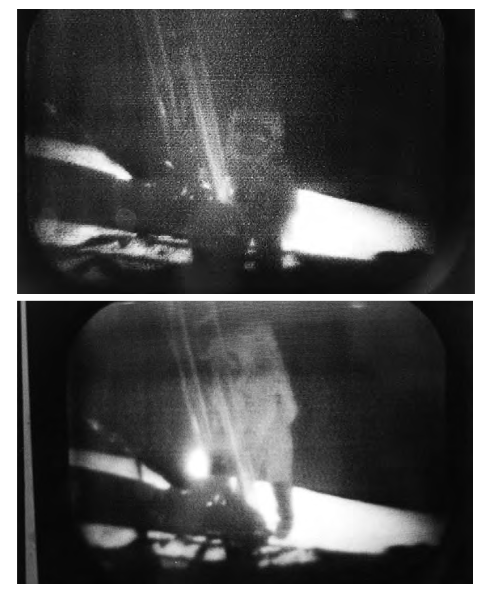
This was because as Armstrong began his 2.4-meter (8-foot) descent down the ladder, he pulled a D-ring which dropped open the Modular Equipment Stowage Assembly (MESA) containing the television camera. Due to the way the camera had to be mounted, however, when the MESA dropped opened, it was upside-down. Avoiding what could have been a major embarrassment forever recorded, technicians at the stations quickly flipped an inconspicuous toggle switch called the ‘Scanner Converter Reversing Switch’, just in time to see Armstrong’s final descent down the ladder. Although NASA initially began the telecast with Goldstone, by the time Armstrong reached the foot of the ladder, Mission Control had switched to the transmission from Honeysuckle Creek. In this circuitous way, the Australian station was bestowed the privilege of transmitting to the world Armstrong’s “one small step.”66
In a little known vignette of history, the way the camera was mounted in the MESA and the way the compartment dropped opened caused the camera to be slightly tilted with respect to the true horizontal-axis of the LM. What this meant was that an even more harrowing appearance was added to Armstrong’s already dramatic climb down the ladder. In reality, although the incline of the ladder was indeed quite precipitous at 65º, it was not as steep as seen on TV, which gave the illusion like it was almost vertical.67
Eight minutes and fifty-one seconds into the broadcast, the Moon had risen sufficiently high over Parkes that the telescope could now capture lunar transmissions with its main detector. Normal television scans rates could now be accommodated and the picture quality improved. Houston quickly switched to Parkes. Thus, the world saw Buzz Aldrin’s descent down the ladder much clearer than his commander’s 20 minutes earlier. NASA stayed with the Parkes television for the remainder of the two and a half hour telecast.68
Twelve hours later, the Madrid Station tracked Eagle as it lifted off the surface of the Moon to successfully rendezvous and dock with Columbia. After rejoining Collins, Apollo 11 made its critical TEI burn for home. On the morning of 24 July 1968, humankind’s first journey to the surface of the Moon came to an end as Hawaii and the Huntsville tracked Columbia to a perfect splashdown less than five kilometers (three miles) from the recovery ship USS Hornet.
Ozzie Covington, who had been so instrumental in smoothing the lines of communications between Houston and Goddard, would recall years later the almost surreal feeling after it was all over.
When we finally landed on the Moon on July 20 1969, I was grateful that our cooperative efforts had paid off. However, during the event, I was in the Mission Control Center in Houston. Some of the data from the lunar excursion module became sporadic and I really became uptight. NASA Administrator Thomas O. Paine happened to stand nearby and noticed my nervousness. He urged me to take it easy. We had come this far and would make it fine, he assured me.Well, we did!69
This sense of tension followed by great relief was echoed by Bill Wood, who by then was the head of the Manned Network. On Apollo 11, he spent the entire eight days at the GSFC Network Control Center, working, eating, and sleeping there.“When I eventually got home,”Wood said,“there was a big sign ‘Welcome@@’@@ greeting me. However, [by then] I was emotionally exhausted and it took me quite a while to really comprehend as to what had happened, even though for years, I had been deeply involved in preparing for this event.”70
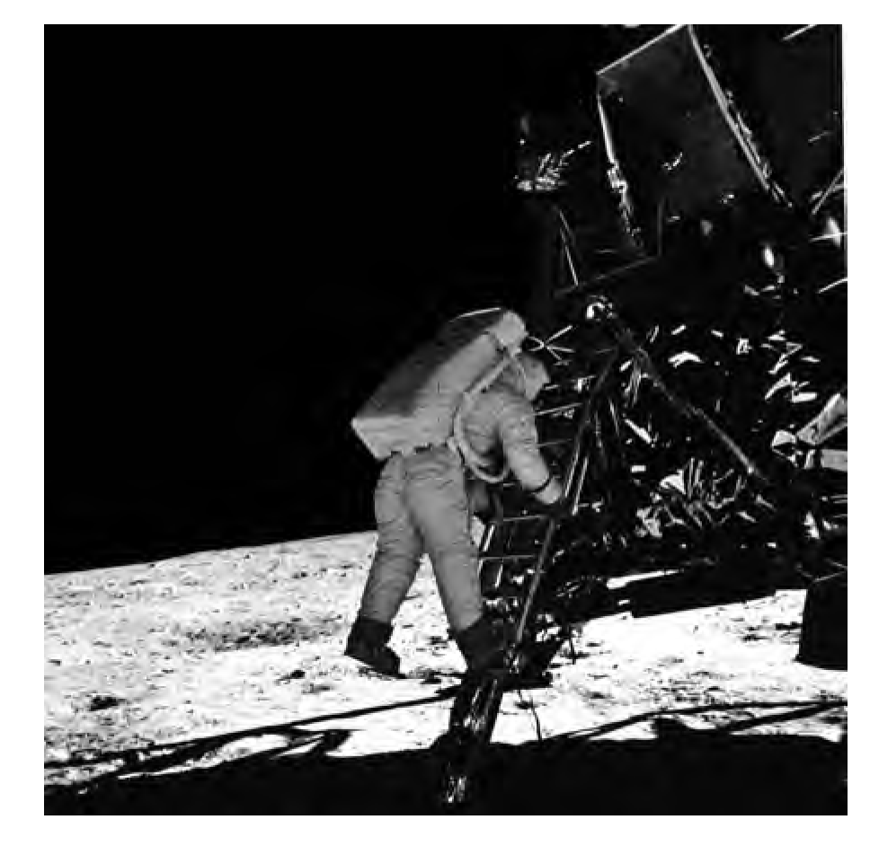
As someone in the “trenches” at the field station, Mike Dinn, who was Deputy Director in charge of Operations at Honeysuckle, framed the accomplishment of the historic mission in a somewhat different perspective. To him, Apollo 11 was a simulation that went well. “The station had reached a point of capability whereby it was comfortable not only with a nominal mission, but comfortable that the station could cope with just about anything nonstandard,” said Dinn.
We had thought through and tried to simulate as many different things as could happen, and so I was comfortable with it. You knew you had the next pass to cope with. Every pass was crucial and critical, even though it might have ended up routine and nothing happened.You had to be, almost, literally on your toes, organized and prepared and staffed to cope with any anomaly. I was also comfortable with the management aspects of it. It was a very good operational philosophy that Chris Kraft had brought whereby everybody in the organization knew the success of the mission depended on them doing their bit properly and correctly, and that the person in the next station was going to do his bit correctly.We were all so busy that it took all your effort and energy to do your part well.And so it was very satisfying and rewarding that we didn’t have Goddard and Houston micromanaging—in great contrast to later years.71
As somewhat of a reality check, Dinn told his shift that morning (Australian time) that the most important data coming from the Moon that day was not going to be television but the bio-medical telemetry of Armstrong and Aldrin. Said Dinn:
If you’re there doing a job, you should be concentrating on the job at hand and the data at hand. . . .The luxury of ‘whooping it up’ doesn’t fit in there.That is the least time you’d be whooping it up is when something critical just occurred. After Apollo 11 landed, you heard Gene Kranz say something like ‘Right, we’ve got to stay or no-stay’.There wasn’t time there to be whooping it up. I fully recognize this doesn’t fit in with what the colloquial media, books, and the like want to say. But I’m afraid that’s what it was.Yes, we were pleased and satisfied with what we achieved,but we were only a small cog in the machine. And yes, we’d done our bit well, but we weren’t as tested as we were in simulations. I used to say that a nominal Apollo mission used about 5 percent of our capability because we had lots of redundancies. . . .When it came down to it, there was an enormous amount of onboard redundancies.They didn’t need the network all the time . . . and to me, that wasn’t a negative; that was a positive. It showed a lot of clever, intelligent, management and design of the mission and the hardware.You had so much redundancy and so many backups and so many options. They were all designed into the mission planning.Yes, there was satisfaction. It was the culmination of what we had trained for, and everybody performed.The satisfaction for me was to help bring the station from this state of not being very competent to one of the best in the network, as Bill Wood told me years later.72
The greatest challenge for the network during the Apollo years occurred in April 1970 when the flight of Apollo 13 had to be aborted as the spacecraft approached the Moon. Fifty-six hours into the mission with the spacecraft some 322,000 kilometers (200,000 miles) from Earth, damaged wires and insulation inside the Number 2 oxygen tank caused it to explode during a routine tank “stir”. The explosion ruptured a line and damaged a valve in the Number 1 oxygen tank, causing it to also lose oxygen. The entire Service Module oxygen supply boiled away in less than three hours, which led to the loss of water, electrical power and use of the Service Propulsion System.
With the lunar landing now scrubbed, the mission turned into a race against time, one of saving the crew before all the life-support consumables expired. Astronauts James Lovell, John L. “Jack” Swigert, Jr., and Fred W. Haise, Jr. quickly powered up the Lunar Module, still attached to the CSM, as a lifeboat. All spacecraft systems except for life support were turned off to save power. Only a low power transmission link tethered the crippled spacecraft to Mission Control. Robert L. Owen, the MSFN Associate Chief for Network Engineering at Goddard during the mission, recalled the network improvising and adapting in real time to the situation.
There was a transponder on board the S-IVB (third-stage of the Saturn launch vehicle) which operated on exactly the same frequency as the transponder on the LM. In our planning, we had never considered powering up the Lunar Module until after the S-IVB had expired. However, when the power failure forced our astronauts to get out of the CM into the LM, we faced the problem of having the S-IVB floating nearby, utilizing the same communication frequencies. This was no good, and we quickly had to work out a scheme which would enable us to capture the signal from the Lunar Module. Eventually, the S-IVB crashed into the Moon, but in the meantime, we had to have reliable communications.We succeeded by working out a configuration we had never anticipated. Apollo 13 presented us with a frightening situation, which luckily, we were able to meet.73
To save power, telemetry had to be transmitted back to Earth using low power transmitters on the LM. Here, the 64-meter radio telescope at Parkes Observatory once again entered the picture. Originally, the Moon was too far north to be seen very well from the observatory and the telescope was not scheduled to support Apollo 13. But as soon as the accident occurred, NASA quickly recognized that Parkes could and would in fact be needed to track the failing spacecraft on its altered free-return trajectory.
The Australians, led by observatory director John Bolton, immediately began to prepare the station. While astronomy equipment was carried down a ladder from the antenna pedestal, the NASA antenna feed was taken up in a lift, installed and checked out at the center of the dish. In a job that usually took one week, the facility was reconfigured in 10 hours after receiving the go-ahead from Goddard.74 Since Parkes was not slated to support this mission, microwave links which had been established for Apollo 11 and 12 were not operational when the emergency occurred. With urgency, a team of engineers from Honeysuckle and Tidbinbilla arrived at Parkes within hours to reestablish the links to Sydney before the next pass of the spacecraft.
Parkes’s inclusion was critical owing to the interference of the S-IVB as the 26-meter (85-foot) antenna did not have a narrow enough beamwidth to discriminate between the Saturn third stage and the LM Odyssey. When Parkes moved out of view, the 64-meter (210-foot) dish at Goldstone was able to do the same, and together, the two were able to track and communicate with Apollo 13, saving the flight from turning into a disaster. From a Mission Control perspective, it was NASA’s finest moment.75
Eighty-seven hours after the explosion, Apollo 13 splashed down southeast of American Samoa with Lovell, Swigert and Haise safely strapped into their couches to bring to an end the only aborted lunar mission of the entire program. In retrospect, Apollo 13 represented a constructive failure that highlighted not only the coordination and preparation of network engineers at GSFC and stations around the world, but also the teamwork and cooperation between the various NASA centers and, more broadly, with the space agency’s international partners.76
Lyn Dunseith, Director of the Data Systems and Analysis Directorate at the JSC recalled years later that:
Throughout the entire program, Goddard provided us with the data we so critically needed.The quality of this support is best evident by the lack of a crisis in a crisis situation, such as the ill-fated Apollo 13 mission. Even during the flight, we had command and voice capability to handle a very serious condition. Our astronauts returned safely thanks in large measure to superb communications and tracking capabilities provided by the Goddard team. Its members are as much a part of manned space flight as anyone in Houston or at the Cape.77
Moon landings continued to unfold after Apollo 13, becoming more ambitious and complex with each mission. Scientific exploration of our nearest neighbor began in earnest on Apollo 12 and moved forward until Apollo 17 concluded the program. Compared to the life and death drama of Apollo 13, these missions went relatively smooth, though not totally trouble free. On Apollo 14, for instance, a malfunctioning abort switch gave flight controllers real trouble. The MSFN enabled Houston to send commands to reprogram the computers aboard the LM directing it to ignore that particular signal. Without this capability, the mission would have had to be aborted since the crew would not have been able to separate from the CM and a lunar landing would not have been possible. Former Flight Director Chris Kraft would say that, “On virtually every flight, the network and its people, while in the background, were ‘under the gun’. We relied on them in every critical situation.”78
These landings left Apollo Lunar Surface Experiments Packages (ALSEP) in five geographical locations across the lunar surface. ALSEPs were a combination of experiments which the astronauts deployed at a site sufficiently far from the LM to collect lunar surface experimental data. There was a central processing station to which all of the peripheral experiment and the Radioisotope Thermoelectric Generator (RTG) were attached. The ASLEPs provided power and data with network stations through its own transmitter and antenna. With several packages in place, these ALSEPs, connected as a network, returned more data than any could on its own.
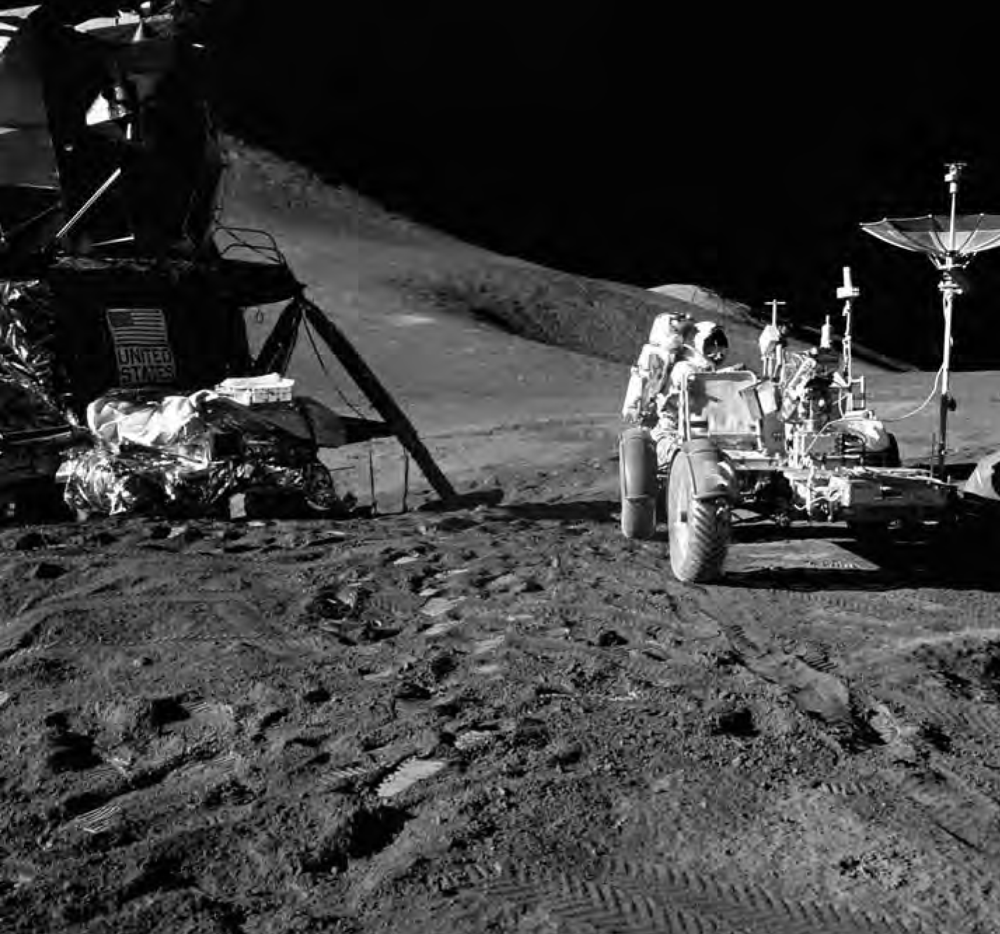
Take the seismometer network emplaced by Apollo 12, 14, 15, and 16. It enabled the location of impacts and moonquakes to be determined very precisely. The network of three Lunar Surface Magnetometers enabled the study of solar wind plasma movement by tracing its magnetic field. Closing out the program, Apollo 17 carried an enhanced package of surface experiments. With nuclear power from the RTGs, ALSEP transmissions were received by NASA’s Spaceflight Tracking and Data Network for years after the last astronauts had left the Moon.79
Having surpassed President Kennedy’s goal of landing a man on the Moon and returning him safely to Earth by the end of 1969, the final three Apollo flights that took place between July 1971 and December 1972 were conducted with scientific exploration in mind. The last of the Apollo lunar flights (the so-called “J-missions” with their emphasis on science), featured the Lunar Roving Vehicle (LRV), a 210-kilogram (460-pound) battery-powered car manufactured by Boeing-Delco. It was essentially an all-terrain vehicle designed to operate in the low-gravity, vacuum, dusty environment of the Moon. The Rover could carry 490 kilograms (1,080 pounds)—allowing for 180 kilograms (400 pounds) for each astronaut, his suit and the portable life-support system—a total distance of 92 kilometers (57 miles) to survey and sample considerable stretches of the terrain.80
Communicating with the rover posed a number of new challenges to the MSFN. For example, incorporating it into the television transmission scheme created a special set of problems. One issue in particular was how to control the motion of the LRV color television camera. Houston’s method of operating the camera was to issue start/stop commands relayed through the network computers at the respective ground station. There was, however, a time lag of 2.5 seconds in the time it took to start and stop the rover camera from the time a command was issued at the MCC. This meant that if the Flight Controller operating the camera wanted to turn it by 5°, the “Stop” command would have to be dispatched before the “Start” command reached the Moon! To compensate, network engineers designed a fix to the ground station computers that staggered start/stop commands thereby allowing the camera to function without having to modify its control format.
Another potential obstacle to successful LRV television transmissions stemmed from voice and telemetry sub-carrier interference into the video portion of the rover’s USB signal. Because the telemetry transmission spectrum overlapped the voice and video data frequencies, the interference left annoying herringbone patterns on TV. To solve this problem, engineers from GSFC, Johns Hopkins University’s Applied Physics Laboratory, and the Goldstone Communication Complex produced a band-pass filter that removed the interference while preserving the video transmission to produce crystal clear images from the rover camera the quality of which would not be surpassed until HDTV became available 25 years later on the Space Shuttle and International Space Station.81
Introduction of the rover also increased the number of transmission sources that the network had to keep track of.The MSFN now had to synchronize all the activities of the Command Module orbiting the Moon, the Lunar Module parked on the surface, the LRV moving around on the surface, and finally, the two astronauts who may each be walking around in different directions. Keeping track of just where the rover was with respect to the LM was obviously important. Needless to say, a more reliable technique was needed than to simply allow the astronauts to visually follow their tracks back to the LM.
The solution—a rather novel one devised by Goddard engineers— was to pinpoint the rover’s position with respect to the LM by extracting differential Doppler data from the two separate S-band transmissions coming, respectively, from the LM and the rover. By observing the Doppler shift, the network could precisely track the rover to provide the necessary navigation data. Mission Control then passed the data to the astronauts who then charted their course, enabling them to venture great distances, even after losing sight of the LM.
Proper coordination of lunar surface activities also required communication between the two astronauts on the surface and the CM Pilot in orbit. Support from MSFN stations was needed since direct line-of-site communications between the two lunar parties was limited to a brief overhead pass on each orbit. Since the ground network could see the CM for just about 50 percent of each orbit and because it was in continuous contact with the astronauts on the surface, MSFN stations served as relay points between the two parties. In this way, real-time voice communications between the surface and the orbiting CM were made possible for about half the time that the astronauts spent on the Moon.
When the Apollo 17 CM America splashed down on 17 December 1972, it marked the end of the first epic journeys to the Moon, a lasting tribute to the 400,000 men and women whose skill and determination placed 12 Americans on the surface of our nearest celestial neighbor. The tremendous sense of pride and accomplishment that came with Apollo deeply affected those who worked on the program, some, on a very personal level.
Robert Barnes, who first worked with Ozzie Covington at White Sands and later joined him in Greenbelt, saw the potential of the MSFN to accomplish something rather unique, something historical. Reflecting years later, Barnes said:
My own involvement with this activity lasted 20 years, more or less, and it was not unlike having a front seat on a roller coaster: you wonder why in hell you got on, but somehow, would not have wanted to miss a chance for such a spectacular ride! With NASA, each of us saw a chance to fulfill a dream. However, in retrospect it must be concluded that all dreams were not the same. Certainly the work that led ultimately to the communications support of Apollo satisfied a host of dreams and was the work of a very dedicated group of people. It stands as an accomplishment for which each member can be justly proud.82
Lyn Dunseith, whose team was instrumental in integrating the Goddard network with the MCC, reflected:
It is fortunate that the computer and communications technology kept pace with the needs of the space program. Indeed this program greatly accelerated the state of the art. Surely, without these tools and the men operating them, we would not have been able to get to the Moon.When we finally landed there and returned our astronauts safely to Earth, I could not fully comprehend what actually had occurred. It really seemed incredulous. For months after Apollo 11, I was somewhat in a daze and found it difficult to believe that we had made that lunar landing, even though I had been personally involved in this dramatic event. . . .Yes, I have the book with all the equations and procedures, but I still find it difficult to believe, as I now look at the Moon, that men actually walked and worked there! It was incomprehensible.83
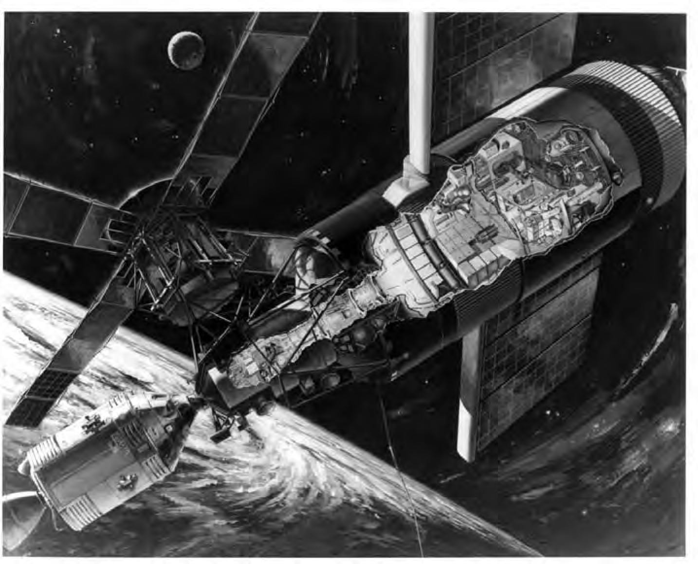
Even before these dramatic flights took place to the Moon, NASA was already thinking about what would be next. Beginning in 1964, exploratory studies were initiated under various names such as Extended Apollo (Apollo-X) and Apollo Extension System (AES) to investigate options for space projects that would come after the lunar missions. The next year, these initiatives were consolidated under the Apollo Applications Program (AAP), which by 1966, had narrowed the scope of the potential projects down to one of Earth orbit application; namely, a space station.
NASA had originally planned 20 Apollo missions. But on 2 September 1970, Administrator Thomas Paine announced that due to a $42.1 million congressional cut in FY 1971 NASA appropriations, Apollo 15 and 19 were to be canceled; the remaining missions were redesignated Apollo 14 through 17. This disappointing cut left space-qualified hardware, which had already been made, immediately available for an AAP, specifically, an Orbital Workshop for a space station. On 17 February 1970, the NASA Project Designation Committee officially designated the project Skylab.84
Network response was required from the start, as Skylab encountered a number of difficulties. On 14 May 1973, the first two stages of a Saturn V launch vehicle placed America’s first space station into low-Earth orbit. At over 86 metric tons, Skylab was at the time the most massive object ever successfully delivered into space. But this almost did not happen.
Sixty-three seconds after liftoff while the first stage was still burning, a crucial micrometeoroid shield on the exterior of the Orbital Workshop designed to protect Skylab from harsh solar heating and micro-impacts, was torn away by aerodynamic forces, carrying with it one of the station’s two solar panels. Even the second solar array, as it turned out, did not fully open upon reaching orbit. The overheated and underpowered space station seemed doomed as NASA scrambled to decide whether or not to even attempt launching a crew to inhabit Skylab.
Over the next week, engineers at Goddard, Houston, and Marshall poured over telemetry that revealed the health and status and the extent of damage to the station. Houston remotely maneuvered the massive spacecraft via a series of command uplinks into a position which minimized excessive solar heating. Having bought some time, engineers poured over the telemetry data to come up with the appropriate fixes. A solar shield was taken up with the first launch of Skylab astronauts on 25 May. Upon reaching the station, Commander Charles “Pete” Conrad, Jr. and his crew (Paul J. Weitz, Pilot and Joseph P. Kerwin, Science Pilot) found that although metal surfaces were hot to the touch, internal conditions were much better than expected. The team lost no time deploying the parasol heat shield which produced a rapid drop in temperature and a spacewalk was done to fully release the stuck solar panel. By the fourth day, conditions had improved dramatically to the point where the three were able to settle into their flight plan. (Kerwin later served as the NASA Headquarter’s OTDA Representative in Australia from 1982 to 1984).85
The project pushed network requirements to new heights. Skylab and its numerous scientific activities created a flood of telemetry that threatened to overwhelm the NASCOM circuits connecting the ground stations to Mission Control. It was the familiar problem of the difference in the data-capturing capability of the sites (now able to receive telemetry at a rate of 250,000 bits-per-second) and the NASCOM line transmission rates (still at a much slower 19,200 bits-per-second). Although 19.2 Kpbs reflected improvement over the recently concluded Apollo lunar flights, ways had to be found to accommodate the discrepancy linking the network stations to Houston. To this end, GSFC network engineers designed a data compression software that enabled each station computer to interrogate and filter-out redundancies and static data that, for instance, had not changed from previous downlinks. The station could then pass on only new or changed (dynamic) data. The modification worked well and was efficient in providing the MCC with all its data need without introducing a time lag.
Even with constant improvements like this, the network was not immune to occasional “glitches.” The fixes were usually simple though. On Skylab 2, the ship Vanguard picked up and transmitted to the crew interference sound bursts coming from cars and fishing boats near the port at Mar del Plata, Argentina. The solution on that particular day was simple: take the Vanguard further out to sea.86
As a true testament to the value of humans in space, Skylab overcame its somewhat inauspicious start to serve as home for three crews, each on progressively longer durations: 28 days for the first mission, 59 for the second and a then record-breaking 84 days for the third. The last group returned to Earth on 8 February 1974. Even though the last crew left the station in 1974, network activities continued on Skylab until, quite literally, its last day in orbit. For several years after the last crew had left the station, commands were uplinked so as to maintain the spacecraft’s orbit in hopes of preserving it long enough so that one of the early Space Shuttle flights could boost it into a higher and more stable orbit. But when the first Shuttle mission was delayed into 1981, it was apparent to NASA that Skylab was not going to survive its slowly decaying orbit. Like it or not, Skylab was coming down.
With its fate sealed, NASA had to make sure that it would reenter the atmosphere without scattering debris in populated areas.Thus prior to reentry, the station’s drag characteristics were altered by uplinking commands that changed its attitude in an attempt to place the impact in the south Atlantic or Indian Oceans. Skylab finally reentered on 12 July 1979, but it ended up scattering debris over Western Australia.A post-mission review of the telemetry showed that incorrect breakup altitude prediction,uncertainties in the ballistic coefficient and atmospheric density caused the impact area to shift downrange to Australia. The reentry demonstrated just how difficult it really is to perform a controlled reentry, even with good telemetry and an active command capability.87
Ed Lawless, who was the NASCOM Voice Network Manager, was in the Goddard Control Center when Skylab reentered. In an interview in 1989, he recalled:
We did a lot of special tracking to make sure we had very good numbers on where it would most likely reenter at the time it was going to happen. . . .We knew that it had come down in the Australia area, and we had just started taking all the circuits down. I had broken the circuits to NASA Headquarters and all of a sudden the network got a telephone call in from our switching center in Australia.They had a pilot on the line with a very vivid description< of the reentry.88 /p>
Henry Iuliano, who headed Goddard’s Network Operations on Skylab, gave a vivid description of the pilot’s encounter:
The pilot was 100 miles [160 kilometers] east of Perth, flying at 28,000 feet [8,500 meters]. He said he saw this aircraft coming at him [and] thought it was a new type of aircraft that looked like blue metallic steel. It was about 5° above the horizon slightly off to his left, and as it approached him, it turned from steel blue to gray. Then the pilot realized it was turning red, that this was the Skylab. It began to break up in large pieces, with a tail at least 100 miles [160 kilometers] long of smaller pieces behind it, and it disappeared behind to his right 7° below the horizon. From the looks of the path, he estimated that it landed about 300 miles [480 kilometers] in back of him somewhere near Alice Springs, and that’s exactly where most of the parts were found! Just before we heard the pilot’s report, when Skylab went by the Ascension Island tracking station, they were still receiving telemetry data.They gave us a reading and said it was in a stable condition—actually flying! Instead of tumbling like we thought it would, it was actually flying at 66,000 feet [20,000 meters] and still giving good telemetry. Somewhere between Ascension and Carnarvon,Australia,when the pilot saw it, was when it began to break up.89
East-West rivalry had led to the United States planting six flags on the Moon, but it also prevented and forestalled any effort for human space cooperation between the U.S. and the Soviet Union. Without being overly dramatic, imagine a spacecraft stranded in orbit unable to return to Earth. Its crew may be injured or in peril as oxygen slowly runs out. What were the chances of another country sending up a rescue team to bring them home? Unlike today, only two countries possessed that capability in the 1970s.
At a meeting with veteran Soviet space scientist Anatoly Blagonravov in New York in April of 1970, NASA administrator Thomas Paine raised the idea of linking the Apollo and Soyuz spacecraft on a joint mission. The idea interested the Soviets enough that the two countries reached an agreement on 28 October 1970 to conduct a joint study of a US/USSR rendezvous mission. The official intent of such a mission was to create a space rescue capability that would be available to aid astronauts who might become stranded in Earth orbit. These discussions culminated nearly two years later on 24 May 1972 when—with great satisfaction to the international community at large—U.S. President Richard M. Nixon and USSR Prime Minister Alexey N. Kosygin signed a space pact officially endorsing the project. This first-ever international space mission was officially named the Apollo-Soyuz Test Project, or ASTP, on 30 June.90
ASTP was based on a 17-point technical agreement negotiated in Moscow on 4 through 6 April 1972. This agreement highlighted the level of international cooperation—with clear requirements on network activities— needed to make the project work. Joint requirements included:
- Control of the flight of the Apollo-type spacecraft will be accomplished by the American Control Center and that of the Soyuz by the Soviet Control Center, with sufficient communication channels between centers for proper coordination.
- In the course of control, decisions concerning questions affecting joint elements of the flight program, including countdown coordination, will be made after consultation with the control center of the other country.
- Joint elements of the flight will be conducted according to coordinated and approved mission documentation, including contingency plans.
- In the conduct of the flight, preplanned exchanges of technical information and status will be performed on a scheduled basis.
- The host country control center or host country spacecraft commander will have primary responsibility for deciding the appropriate preplanned contingency course of action for a given situation in the host vehicle. Each country will prepare detailed rules for various equipment failures requiring any of the pre-planned contingency courses of action.
- In situations requiring immediate response, or when out of contact with ground personnel, decisions will be taken by the commander of the host ship according to the preplanned, contingency courses of action.
- Any television downlink will be immediately transmitted to the other country’s control center. The capability to listen to the voice communications between the vehicles and the ground will be available to the other country’s control center on a preplanned basis, and upon joint consent, as further required or deemed desirable.
- Both sides will continue to consider techniques for providing additional information and background to the other country’s control center personnel to assist in mutual understanding (including the placement of representatives in each others control centers).
- As a minimum, flight crews should be trained in the other country’s language well enough to understand it and act in response as appropriate to establish voice communications regarding normal and contingency courses of action.
- A public information plan will be developed which takes into account the obligation and practices of both sides.91
Apollo-Soyuz presented a new challenge to the GSFC tracking and communications team. The challenge was one of providing links between two orbiting spacecraft with two control centers with two entirely different protocols. The mission was unique in that the NASA network had to, for the first time, function in coordination with a Soviet network. Each had its own communications protocol which now had to “talk to each other.” Arrangements reached between the two sides stipulated that each control center could receive all voice and television communications transmitted to either spacecraft. Either crew could be contacted by voice from any station, whether American or Soviet.
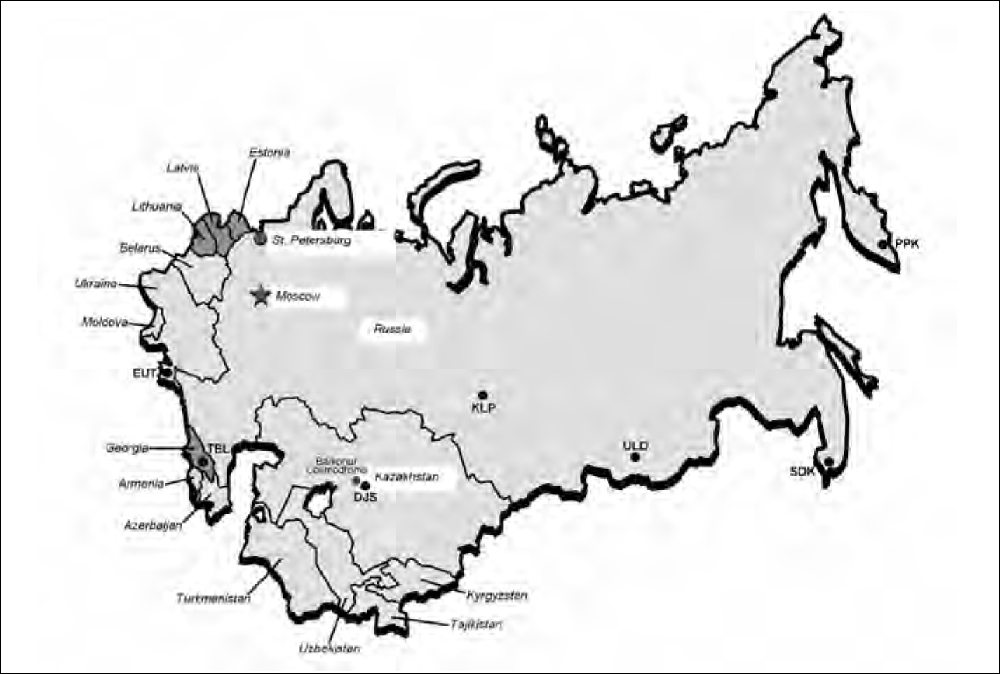
Some 2,300 men and women at field stations and 500 at Goddard were assigned to the mission (more than that assigned to the later Apollo flights). The NASA stations that supported ASTP were a subset of the 9-meter USB sites that supported the lunar missions, plus a handful of STADAN sites:
- Ascension (ACN)
- Bermuda (BDA)
- Guam (GWM)
- Hawaii (HAW)
- Madrid (MAD)
- Newfoundland (NFL)
- Orroral (ORR)
- Quito (QUI)
- Rosman (ROS)
- Santiago (AGO)
Coverage from Orroral, Quito, Rosman and Santiago indicated the considerable progress that was made in the early 1970s in drawing on STADAN stations to assist in human spaceflight operations. In addition to the land stations, the venerable Vanguard was stationed off the Argentine coast near Mar del Plata. Three ARIA aircraft also supported launch and reentry operations in the Indian Ocean and South Pacific, taking off from airbases in South Africa and Australia.
The Soviet network consisted of seven stations stretched across the vast expanse of the USSR. In addition, the Soviets deployed two ships, the Korolev (ASK), positioned off Canada, and the Gagarin (KYG), near Chile. The Soviet stations were:
- Dzhusaly, Kazakhstan (DJS)
- Eupatoria, Ukraine (EUT)
- Kolpashevo, Russia (KLP)
- Petropavlovsk-Kamchatskaya, Russia (PPK)
- Tbilisi, Georgia (TBL)
- Ulan-Ude, Russia (ULD)
- Ussuriysk, Russia (SDK)92
It was during ASTP that a new dimension in space tracking and data acquisition was added. In a harbinger of things soon to come, NASA added for the first time, a specific space element to the network. The newly developed Applications Technology Satellite-6 (ATS-6), made by Fairchild, was used to relay communications from the orbiting spacecraft to ground stations. This increased coverage dramatically, from approximately 17 percent to 60 percent (an increase from 15 to 52 minutes) of each 87 minute orbit.
ATS-6 was the second generation of the GSFC Applications Technology Satellite program. Its predecessors, ATS-1 through 5 launched between 1966 and 1969, were the first generation in the series. Originally designated ATS-F, the program had included a second, very similar satellite called ATS-G, but it was canceled for budgetary reasons. Eight of the experiments on ATS-6 were explicitly designed for communications relay studies to prepare for the next generation TDRSS.
But use of ATS-6 on Apollo-Soyuz was not orginally planned. Bill Wood explained.
We at Goddard were very reluctant to commit the use of the ATS except on the basis of a test and not to meet ASTP requirements.This was another example of the camel’s nose in the tent. The very nature of the ATS was as a test program.The closer we got to launch, the more important it seemed to get.We wound up putting a lot of effort into putting equipment in Spain to interface with ATS.Thank goodness it worked, but I for one was nervous.93
At nearly 1,360 kilograms (3,000 pounds) with a span of over 15 meters (50 feet), ATS-6 was quite the imposing bird. It included a 9-meter (30-foot) diameter parabolic antenna, an Earth-viewing module located at the focus of the parabola and two solar arrays for power. Not only big, it was also quite complicated for its time. All the communication experiment was located in a section of the Earth-viewing module with feeds for the large antenna mounted on top of the module and Earth-pointing ancillary antennas populating the bottom side of the satellite.94
Launched out of the Kennedy Space Center atop a Titan III-C on 30 May 1974, GSFC had a list of performance objectives that they wanted to see from the satellite:
- Demonstrate the feasibility of using a nine meter diameter, deployable, steerable, high-gain antenna with good RF performance in the 6.5 GHz range.
- Provide spacecraft fine pointing to within ±0.1° accuracy.
- Demonstrate precision interferometer attitude measuring technology.
- Provide an Earth-facing, stable spacecraft at geosynchronous altitude for experiments to be selected by NASA Headquarters.
Originally placed in geosynchronous orbit at 94ºW over the Galapagos Islands, the big satellite was immediately used to test operational compatibility with the network ground stations. In June 1975, Goddard controllers, transmitting through Rosman, commanded the satellite to 35ºE over Lake Victoria, Africa, to support the Indian government’s Satellite Instructional Television Experiment (SITE). From this vantage point, ATS-6 could also participate in “millimeter-wave” communication experiments with several European ground terminals as well as relay ASTP data to ground receiving stations.
To do this, it pointed its antenna towards the horizon and generated a signal for the Apollo spacecraft to lock onto as it moved into view. Upon establishing contact, Apollo transmitted telemetry, voice and television to the satellite. ATS-6 then relayed the signals to a 30-meter (100-foot) antenna at the Buitrago ground station outside Madrid. Madrid then acted as the ground terminal, relaying the spacecraft’s data via commercial Intelsat to the United States.95 After supporting ASTP and the one-year Indian experiment, it was slowly moved by a series of ground commands to the Western hemisphere where it was stationed at 140ºW over the Pacific until it was deactivated in July 1979. During its final trek as it was being repositioned in July 1976, ATS6 demonstrated the social benefits possible of data relay by providing temporary (and goodwill) communication services while passing over 27 countries on the way to its final destination.
Engineers and scientists at Goddard conducted a series of space communication experiments using ATS-6 in its five year life. One of them, the “ATS-F Tracking and Data Relay Experiment,” designed by F. O. “Fritz” von Bun and exercised in conjunction with a Nimbus weather satellite, was designed specifically as proof-of-concept testing for the upcoming TDRSS (see Chapter 7). ATS-6 also relayed television signals to remote areas of Alaska, the Rocky Mountains and the Appalachians. This operation, beginning in August 1974, brought live, public education television programming to those areas of the United States for the first time.96
Although preparations leading up to ASTP broke new ground in terms of cooperation between the two countries, the Soviets still found it difficult to break with their veil of secrecy. On 2 December 1974, seven months before the scheduled launch of ASTP, Soyuz 16 was launched from the Baikonur Cosmodrome—completely unannounced. NASA had known that a dress rehearsal was coming, but only when the Soyuz spacecraft reached orbit did Moscow bother to inform the Americans that it was in fact already underway! The Agency was able to put the mission to some use through a quickly organized, 15-hour joint tracking exercise at the behest of the Soviet Union. This even included a simulated launch so that the Soyuz crew had something to “aim” at in a mock rendezvous. Data recorded by NASA ground stations were relayed to Goddard and, after the mission, compared to data received by Soviet stations during the same time period. This comparison merely verified what NASA already knew: the network was ready for the mission.97
All this took place in the Cold War. The United States had just pulled out of an unpopular war in Southeast Asia, one which pitted the country face-to-face against communism half a world away. It had cost 50,000 American lives. While U.S. preparations for the mission were done in the open, Soviet preparations, although more open, were still for the most part veiled in secrecy (as Soyuz 16 so clearly illustrated). It was not surprising, then, that NASA went about preparations for the mission with a certain sense of trepidation. While international cooperation was what ASTP was all about, NASA kept finding itself in situations asking “How does one cooperate without giving away too much from a technology standpoint.”
A case in point was the technology needed to physically dock the Apollo with the Soyuz. The two not only had different docking mechanisms but also different atmospheres inside the spacecraft (Apollo operated at a cabin pressure of about 0.3 atmospheres while Soyuz operated at 1 atmosphere, or standard sea-level). The technology imbalance led to the U.S. developing with help of the Soviet Union, the Docking Module, the central, critical piece of equipment without which the mission could not have succeeded. The Docking Module turned out to be purely U.S. technology in the end. Technology, however, was not the only thing that changed hands during preparations for ASTP. There was also a language barrier. While it is well known that both flight crews had to learn each other’s language during training, what is lesser known was that there were actually classes conducted in Russian at the GSFC to train the network engineers who would be communicating with their counterpart in the Soviet Union. The direction from NASA management was, “If we’re going to deal, we have to learn to speak the language.”98
At 1220 hour GMT, 15 July 1975, Commander Aleksei A. Leonov and Flight Engineer Valeri N. Kubasov blasted off aboard Soyuz 19. It was the first time that a Soviet space launch was seen live on television by its own people and others around the globe. The communication link traveled in a circuitous route: Moscow to Helsinki, Stockholm, Copenhagen, Prague, Hamburg, Frankfurt, and then to a Comsat ground station at Raisting, near Munich, West Germany. From there it was sent via the Comsat satellite to the United States. The routing was requested by the Soviets since an AT&T ground station planned for this flight was not finished in time. According to Charles J. Goodman, Goddard’s technical manager for television on ASTP, the routing involved some seven relay points on both the East and the West. It also required conversion of signals from the Russian color system protocol (SECAM III) to the European PAL color system and finally to American standards National Television System Committee (NTSC).99
Despite the complexity, communications never showed any noticeable degradation. “Just about everybody broke his back to help make it happen,” Goodman remembered. “We had some 50 hours of virtually flawless television transmission. Our arrangements began on November 25, 1974 and everything was in place for the launch some eight months later.”100 Goodman specifically pointed out a first-rate relationship with the European Broadcast Union headquarters in Brussels, Belgium, and its technical personnel. Apollo- Soyuz was seen by more people in more countries than even Apollo 11.
Seven and a half hours later, Commander Thomas P. Stafford, CM Pilot Vance D. Brand and Docking Module Pilot Donald K. “Deke” Slayton were launched atop a Saturn IB rocket from pad 39B at the Kennedy Space Center. After a series of orbital maneuvers—the most complex of its kind during the Apollo era in which the American CSM chased the Soyuz—the two spacecraft began station keeping at 1551 hour GMT on 17 July. They docked 24 minutes later. After Slayton and Stafford equalized the atmosphere inside the Docking Module with that of the Soyuz, the hatches were opened and the now celebrated “space handshake” between the two mission Commanders was televised live to the world.
Over the next two days, the crews exchanged mementos and conducted (token) zero-g science experiments; a second docking was also performed. They also exchanged cuisines, with the Soviets offering a choice of hot soups from the different peoples of the USSR—Ukrainian beetroot and cabbage soup, a piquant Georgian mutton broth and Russian sorrel and spinach soup. In return, their western colleagues offered up such delicacies as applesauce, spaghetti, apricot pudding, and bacon squares.101 After two days, the two vehicles undocked for the final time. After a fly around photography experiment in which the Soyuz was used to block out the Sun simulating an artificial solar eclipse, the two spacecraft went their separate way. Two days later, Leonov and Kubasov de-orbited their spacecraft, bringing it back to Kazakhstan on 21 July. As with the launch six days earlier, their landing and recovery was seen by a live television audience for the first time. Apollo stayed in orbit for another three and a half days, splashing down four and a half miles from the recovery ship New Orleans near Hawaii on the afternoon of 24 July to bring to an end the first international space venture and the final Apollo splashdown.102
Chris Kraft would reflect years later on the uniqueness of the ASTP experience and what each side was able to learn from the other:
Getting to know the Russian management approaches, their thoughts and objectives, both in a national and personal sense, was an extremely interesting experience. The Russians are very different and their motivation is certainly not the same as ours. Their pride is very important and their engineering skills are very good. They are just as smart as we are. They did a superb job of building parts of the machinery and in the planning. They needed a great deal of help from us particularly in getting the job done within the management confines that existed in the Soviet Union. Here they needed help, and they told us so. Certainly the Russians do not do things in a manner even closely resembling our approaches. They are more secretive and I am not sure that we really learned how they do things internally. For instance, I do not remember ever having seen an organizational diagram. It was a long and protracted process. In the beginning, I thought a joint project might just not be possible. There was a great lack of credibility and trust between us and our ability to communicate. But slowly, primarily due to the tremendous efforts Glynn S. Lunney, the American Technical Director for the mission and his Russian counterpart, Professor Konstantin Davydovich Bushuyev, their associates and the respective space crews, we found a way to get things on the right track. They deserve all the credit for this. It was a fantastic achievement for both sides when we finally flew this mission.103
The Apollo-Soyuz Test Project stood as a symbol of the Nixon-Ford era of détente. This atmosphere of cooperation was short lived however. Soviet-American relations soon deteriorated, reaching a new low in 1979 after the invasion of Afghanistan. Cooperation in space exploration turned tepid and would stay dormant for the next two decades. For the balance of the 1970s, human spaceflight practically disappeared from the American public’s eyes. While atmospheric Approach and Landing Tests of the developing Space Shuttle were conducted as the new decade approached, NASA would not return a person into space until 1981. In a way, Apollo Soyuz marked the swansong for the first era of human space presence, one driven by the intense rivalry between the two Cold War superpowers. How fitting then that this era, which began in 1961 with Alan Shepard’s 15 minute response to Gagarin’s flight, concluded with a handshake in space between those same superpowers.
NASA’s Spaceflight Tracking and Data Network stood out during this time to make possible this success story and America’s victory in the space race. The role it played led to a much deserved recognition by Congress when in September 1974, the House declared that
After completing an investigation which took nearly a year, it [has] concluded that the Tracking and Data Acquisition Program is being managed and operated in an effective and efficient manner. The people working in the program—both government and contractor, both U.S. and foreign—are doing an excellent job, and are to be commended for their contributions to the success of the U.S. space program.
As one committee member put it,“They are the unsung heroes of the space program.”104
Noel W. Hinners, who retired as Director of the Goddard Space Flight Center in 1989, echoed this sentiment when he recalled the uniqueness of the time and place that was the Space Race, and how NASA’s tracking and communication networks met the challenge. “There was a unique contest: the dream of man’s quest to explore space and the harsh technical realities which had to be faced if these dreams were to come true. The area of space tracking, communications and data acquisition from orbiting satellites and eventually from the Moon and beyond, was an important part of this odyssey. A dedicated team of men and women, both in and out of government, helped to make these dreams a reality. They were the first generation of ‘space trackers’ whose electronic links tethered the spacecraft to its controllers and scientists. The Goddard Space Flight Center, as a member of the NASA-industry team, [was] proud to have contributed to these expeditions in space.”105
Endnotes
- Kathleen M. Mogan and Frank P. Mintz, Keeping Track (NASA Goddard Space Flight Center, 1992), p. 44.
- Ibid.
- Alfred Rosenthal, Vital Links (NASA Goddard Space Flight Center, 1983), p. 136. Three locations spaced approximately 120° apart in longitude were required to provide seamless coverage of a lunar spacecraft over 24 hours.
- Mogan and Mintz, pp. 48-49.
- R. Owen, “Evolution of Telemetry, Command and Voice on the MSFN,” memorandum to OWU, Goddard Space Flight Center, 29 January 1991.
- Ibid.
- Linda Neuman Ezell, NASA Historical Data Book, Volume III: Programs and Projects 1969-1978 (National Aeronautics and Space Administration Special Publication-4012, 1994), Table 6-32.
- “The Worldwide Deep Space Network” (NASA Jet Propulsion Laboratory JPL 400-326, May 1989).
- William R. Corliss, History of the Goddard Networks (NASA Goddard Space Flight Center, 1969), p. 131.
- Mogan and Mintz, pp. 49–51.
- Gerald M. Truszynski to Donald Crabill, “The Need for Apollo Ships,” 05 March 1964 Folder Number 8792, NASA Historical Reference Collection, NASA History Division, NASA Headquarters, Washington, DC.
- In the letter, Truszynski referred to these stations as Pretoria and Mauritus (Mauritius), respectively.
- See Note 11.
- Ibid.
- Ibid.
- There was originally concern by NASA regarding the reliability of communications with the tracking ships. Because of this, NASA installed flight control consoles in them—a move that was distinctively counter to the MSFN trend toward centralizing all control functions at the Mission Control Center in Houston. Though installed, these control consoles were never actually used on a real mission.
- A particular concern of Apollo engineers was reentry tracking, that is, locating the position of the Command Module during the communication blackout while the spacecraft was surrounded by a layer of super-heated plasma during reentry. Because the transponders were also blacked out during this period, the C-band radars lost this tracking aid. Reentry tracking of the CM returning from the Moon was more difficult than for vehicles returning just from Earth orbit since reentry could occur over a larger corridor at a much higher velocity. In addition, the Command Module had a center-of-gravity offset allowing the capsule to fly a lifting trajectory using roll maneuvers. In this manner, the trajectory could be controlled. For energy management, the capsule first plunged into the atmosphere and then briefly skipped out of the atmosphere before making its final descent towards the recovery area. During the early 1960s, the acquisition problem was considered potentially serious. A radio interferometer was even proposed by Mengel’s group as a solution. In the end, a skin-tracking radar was designed and installed on the recovery ship Huntsville.
- Apollo Instrumentation Ships Technical and Management Problems, 12 June 1967, Folder 8792, NASA Historical Reference Collection, NASA History Division, NASA Headquarters, Washington, DC.
- Ibid.
- Ibid.
- Letter from T. O. Paine to Senator Clinton P. Anderson, 28 October 1969, NASA Office of the Administrator, Folder Number 8792, NASA Historical Reference Collection, NASA History Division, NASA Headquarters, Washington, DC.
- Ibid.
- Ibid.
- Ibid.
- Ibid.
- Edmond C. Buckley to Harry J. Goett, Requirements for Instrumentation Aircraft for Support of Apollo, 8 January 1966, Folder Number 8798, NASA Historical Reference Collection, NASA History Division, NASA Headquarters, Washington, DC.
- Ibid.
- Letter from H. R. Brockett to Robert C. Seamans, Jr., 29 May 1967,ARIA Aircraft, Folder Number 8798, NASA Historical Reference Collection, NASA History Division, NASA Headquarters,Washington, DC.
- “Fact Sheet:Advanced Range Instrumentation Aircraft,”Office of Information, United States Air Force Systems Command, November 1976.
- W. L. Folsom, Action Item (OTDA) Clarification of NASA Requirements for ARIA, 02 May 1966, Folder Number 8798, NASA Historical Reference Collection, NASA History Division, NASA Headquarters, Washington, DC.
- As part of an Air Force consolidation of large test and evaluation aircraft, basing for the ARIA was transferred from the Eastern Test Range at Patrick Air Force Base in Florida to the 4950th Test Wing at Wright Patterson Air Force Base near Dayton, Ohio in December 1975. In 1994, the ARIA fleet was relocated to Edwards Air Force Base, California, as part of the 452nd Flight Test Squadron in the 412th Test Wing. The final flight of ARIA took place on 24 August 2001.
- Edmond C. Buckley was the NASA Vice Chairman of the panel. Christopher C. Kraft represented the Manned Spacecraft Center and Ozro M. Covington the Goddard Space Flight Center. The Air Force Eastern Test Range at the time had a critical need for the ARIA in order to support testing activities for development of the Navy’s Poseidon submarine launched ballistic missile.
- Edmond C. Buckley, NASA/DOD ARIA Management Agreement, 26 January 1965,Folder Number 8798,NASA Historical Reference Collection, NASA History Division, NASA Headquarters,Washington, DC.
- George E. Mueller to Buckley, Instrumentation Aircraft Support, 11 May 1964, Folder Number 8798, NASA Historical Reference Collection, NASA History Division, NASA Headquarters, Washington, DC.
- Letter from H.R.Brockett to Robert C.Seamans,Jr.,29 May 1967,A/Ria Aircraft, Folder Number 8798, NASA Historical Reference Collection, NASA History Division, NASA Headquarters,Washington, DC.
- See Note 7.
- “ARIA 328 Memorial,” http://www.flyaria.com/memorial/1999/personal. htm (accessed 27 December 2005).
- “Intelsat,” Jet Propulsion Laboratory Mission and Spacecraft Library, http://msl.jpl.nasa.gov/Programs/intelsat.html (accessed 12 October 2005).
- At the speed of light, it takes approximately 1.3 seconds for radio signals to travel from Earth to the Moon.
- They were: Antigua, Ascension, Bermuda, Canary Island, Canberra, Cape Canaveral, Carnarvon, Corpus Christi, Goldstone, Guam, Guaymas, Hawaii, Grand Bahama, Madrid.
- Corliss, pp. 244–249.
- Ibid.
- Force email.
- Letter from James Webb to E. S. Terlaje, 7 April 1967, Folder Number 8813, NASA Historical Reference Collection, NASA History Division, NASA Headquarters, Washington, DC.
- Brooks, Grimwood, Swenson, Chariots for Apollo (National Aeronautics and Space Administration Special Publication-4205, 1979), Chapter 9.
- Phillips to Administrator, “Apollo 5 Mission (SA-204/LM-1) Post Launch Report #1,” 12 February 1968.
- See Note 45.
- Ibid.
- Ibid.
- The first use of television on a human flight by NASA was actually on Mercury Atlas 9, where a camera was trained on astronaut L. Gordon Cooper mainly to monitor his movements and behavior during the 34-hour mission. Three Mercury ground stations were set up to receive the slow-scan television pictures. However, they could not be broadcast live to an audience.
- Henry P. Yschek, MSC, to North American, Contract Change Authori zation 95, 24 Sept. 1963; William A. Lee to Mgr., ASPO, “The case for television transmission during LEM descent and ascent,” 27 April 1964.
- Phillips to Manager, ASPO, “Apollo On-board TV,” 10 April 1968.
- Walter Cunningham, The All-American Boys (Simon & Shuster, Inc., 2004), p. 155.
- “The Fresnedillas (Madrid, Spain) MSFN Station,” http://www.honeysucklecreek. net/other_stations/fresnedillas/intro.html (accessed 02 November 2005).
- Apollo 8 Mission Commentary, 24 December 1968, tapes 242-3, 277-1.
- Robert Zimmerman, Genesis: The Story of Apollo 8 (Random House, Inc., 1998), pp. 210–211, 240–249.
- “American Experience: Race to the Moon,” http://www.pbs.org/wgbh/ amex/moon/peopleevents/e_telecasts.html (accessed 07 November 2005).
- Brooks, Grimwood, Swenson, Chapter 12.
- “Apollo 15 Camera Equipment,”http://www.lpi.usra.edu/expmoon/Apollo15/ A15_Photography_cameras.html#COLORTV (accessed 07 November 2005).
- Bill Wood email.
- Kerrie Dougherty, John Sarkissian, “Dishing Up the Data: The Role of Australian Space Tracking and Radio Astronomy Facilities in the Exploration of the Solar System,” IAC-02-IAA.2.3.01, 2002.Also see John Sarkissian,“On Eagles Wings:The Parkes Observatory Support of Apollo 11 Mission,”Astronomical Society of Australia,Volume 18, 2001.
- Ibid.
- Ibid.
- Ibid.
- Glen Nagle interview.
- See Note 61 and Nagle interview.
- See Note 65.
- See Note 61.
- Ozzie Covington interview from Vital Links.
- Bill Wood interview from Vital Links.
- Dinn interview.
- Ibid.
- Robert Owen interview from Vital Links.
- “Apollo and the Dish Down Under,” CSIRO Media Release 2000/266, 12 October 2000.
- See Note 61.
- Tom Reid was the colorful Station Director at Honeysuckle Creek during the Apollo missions. He had a long and distinguished association with NASA and was one of the longest serving Station Directors. He first became involved with NASA while working with the Weapons Research Establishment at Woomera in the 1958-1962 time period. He became the first Station Director at Orroral Valley in 1964, and in 1967 was appointed Director at Honeysuckle Creek, where he provided inspiration and leadership during the lunar landings. In 1970, he began an 18-year assignment as Director of the Tidbinbilla Deep Space Communications Complex. Reid was awarded the Member of the Order of the British Empire (MBE) in January 1970 in recognition of his contribution to Australia meeting its commitments to the Manned Space program. It was actually bestowed upon him by Her Majesty the Queen when she was in Australia during the Apollo 13 mission. She happened to ask him how the mission was going when she presented it. (Charles T. Force review comments, 14 September 2006.)
- Lyn Dunseith interview from Vital Links.
- Chris Kraft interview from Vital Links.
- “Experiment Operations During Apollo EVAs,” ARES Publications, http://ares.jsc.nasa.gov/HumanExplore/Exploration/EXLibrary/docs/ ApolloCat/Part1/ALSEP.htm (accessed 8 November 2005).
- Although the Lunar Roving Vehicle had a total range capability of 91 kilometers (57 miles), the astronauts would not have the time nor safety margin to fully use this capacity. On Apollo 15, the LRV was driven a total of 27.7 kilometers (17.2 miles) with a maximum range from the Lunar Module being 5 kilometers (3.1 miles). On Apollo 16, the total was 26.7 kilometers (16.6 miles) and reached a distance of 4.5 kilometers (2.8 miles) from the LM.The Apollo 17 LRV accumulated 35.9 kilometers (22.3 miles) with a maximum distance of 7.5 kilometers (4.7 miles) from the LM.
- Mogan and Mintz, p. 55.
- Robert Barnes interview from Vital Links.
- See Note 77.
- Helen T. Wells, Susan H. Whiteley, Carrie Keregeannes, Origins of NASA Names (National Aeronautics and Space Administration Special Publication-4402, 1976), p. 109. The name ‘Skylab,’ a contraction connoting ‘laboratory in the sky,’ was suggested in 1968 by Lt. Colonel Donald L. Steelman of the United States Air Force while assigned to NASA. He later received a token award for his suggestion.
- W. David Compton, Charles D. Benson, Living and Working in Space: A History of Skylab (National Aeronautics and Space Administration Special Publication-4208, 1983), Chapter 14.
- Mogan and Mintz, p. 61.
- Russell P. Patera, William H. Ailor, “The Realities of Reentry Disposal,” The Aerospace Corporation, p. 6, 2001.
- Carolynne White, GSFC News Release 89-2, 13 January 1989, Folder Number 8818, NASA Historical Reference Collection, NASA History Division, NASA Headquarters, Washington, DC.
- Ibid.
- “Chronology: Beginnings of ASTP,” NASA History Division, http://history. nasa.gov/astp/chrono.html (accessed 09 November 2005).
- Edward Clinton Ezell and Linda Newell Ezell, The Partnership (National Aeronautics and Space Administration Special Publication-4209, 1978).
- Mogan and Mintz, pp. 63–64.
- Bill Wood email.
- Donald H. Martin, “Communication Satellites, Fourth Edition,” (The Aerospace Corporation Press, 2000), Chapter 1.
- On Apollo-Soyuz, a transportable station with a 40-foot automatic tracking antenna was set up near Madrid to supplement the 100-foot antenna located at Buitrago, serving as the primary ground relay point between the ATS-6 satellite and the rest of the network.
- See Note 94.
- “U.S. Tracking Soyuz 16,” JSC News Release No. 74-272, 03 December 1974, Folder Number 8781, NASA Historical Reference Collection, NASA History Division, NASA Headquarters, Washington, DC.
- Watson interview.
- Rosenthal, pp. 189–190.
- Ibid.
- Kenneth Gatland, Manned Spacecraft (Macmillan Publishing Co., Inc., New York, 1976), pp. 249–252.
- In what could have turned the first international space mission from an unparalleled success into tragedy, a series of events during reentry led to the three American astronauts accidentally inhaling noxious fumes from the Command Module’s Reaction Control System.This led to an unanticipated two week hospital stay for the crew in Honolulu. For Deke Slayton, it also meant the discovery of a small lesion on his left lung.An exploratory operation indicated it was a nonmalignant tumor. After a short convalescence, Slayton joined the four other ASTP crew members for two celebratory tours, one in the Soviet Union and the other in the United States.
- See Note 78.
- Report by the Subcommittee on Aeronautics and Space Technology of the Committee on Space Sciences and Astronautics, United States House of Representatives Ninety-Third Congress Second Session, September 1974.
- Mogan and Mintz, pp. 56.